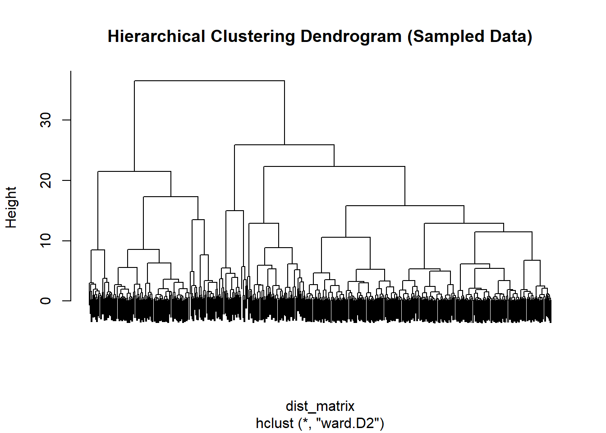
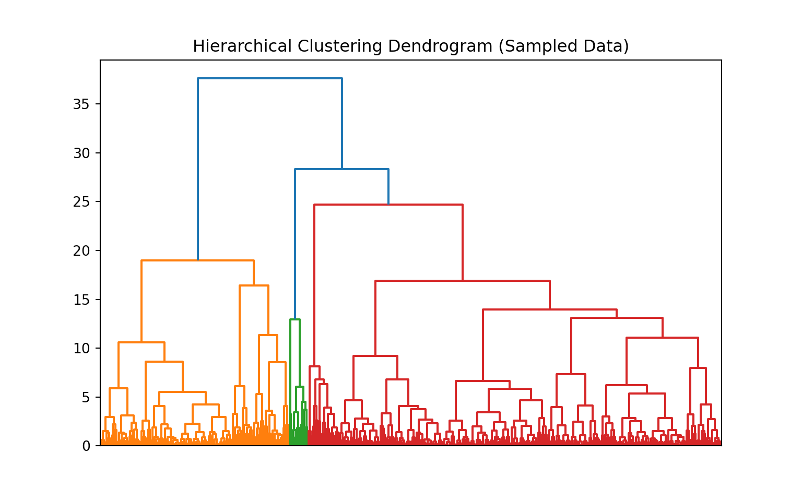

library(tidyverse)
library(dplyr)
bank <- read.csv("data/raw/bank-additional.csv", sep = ";", stringsAsFactors = FALSE)Week5: Clustering and PCA
Loading Data
We reuse the same prepared data introduced earlier.
R: Loading Data and Creating Splits
Python: Loading Data and Creating Splits
import pandas as pd
from sklearn.compose import ColumnTransformer
bank = pd.read_csv("data/raw/bank-additional.csv", sep=";")1 From Prediction to Structure
So far in this module, most of our work has been supervised:
- we had a target variable,
- we trained models to predict it,
- we evaluated performance using metrics such as accuracy, precision, and recall.
Clustering changes the story.
In clustering, we do not predict an outcome.
Instead, we try to discover structure in the data.
1.1 What is clustering trying to do?
Clustering groups observations that are similar to each other, based on their features.
The key difference is:
There is no target label telling us what the “correct” cluster is.
So we are not answering: - “Is this prediction correct?”
We are answering questions such as: - “Do the data naturally form groups?” - “If we form groups, are they coherent and interpretable?” - “Do different algorithms suggest different structures?”
This means evaluation is fundamentally different.
1.2 What does “evaluation” mean in clustering?
Because we do not have ground-truth cluster labels, we cannot talk about accuracy in the same way.
Instead, we often rely on:
- internal measures (e.g. compactness vs separation),
- visualisation (e.g. PCA plots),
- interpretability (do the clusters make sense?),
- and stability (do clusters change a lot when we change settings?).
None of these measures are perfect.
That is an important lesson:
Clustering results are not “facts”. They are modelling outcomes.
1.3 Why this matters for our datasets
We are using two datasets in different ways:
- Bank Marketing dataset (demo):
- we already know there is a target (
y),
- but clustering ignores it,
- we use it to practice clustering mechanics and interpretation.
- we already know there is a target (
- Online Retail dataset (your project):
- clustering can be genuinely meaningful,
- because there is no natural target,
- and grouping customers or invoices can help discover behavioural segments.
1.4 Key idea to carry forward
In clustering, your choices define what “similarity” means.
That includes decisions about:
- which features to use,
- whether and how to scale them,
- which clustering algorithm to apply,
- and how to interpret the results.
In the next section, we will prepare the Bank Marketing data for clustering, paying close attention to these choices.
2 Preparing the Data for Clustering
2.1 Selecting Features
Clustering algorithms such as k-means rely on numerical distances (typically Euclidean distance).
Therefore: - we must use numeric variables, - we exclude the target variable y, - and we avoid purely categorical variables for now.
For demonstration, we select a subset of numeric variables:
agedurationcampaigneuribor3mcons.price.idxcons.conf.idx
These capture: - client characteristics, - campaign intensity, - economic context.
2.1.1 R: Selecting Numeric Variables
num_vars <- c("age", "duration", "campaign",
"euribor3m", "cons.price.idx", "cons.conf.idx")
cluster_data <- bank[, num_vars]
head(cluster_data) age duration campaign euribor3m cons.price.idx cons.conf.idx
1 30 487 2 1.313 92.893 -46.2
2 39 346 4 4.855 93.994 -36.4
3 25 227 1 4.962 94.465 -41.8
4 38 17 3 4.959 94.465 -41.8
5 47 58 1 4.191 93.200 -42.0
6 32 128 3 0.884 94.199 -37.5
What this code is doing
Creates a vector of selected numeric variables.
Subsets the dataset to include only these columns.
Displays the first few rows.
2.1.2 Why this matters:
- k-means operates on numeric input.
- Including categorical variables without encoding would break distance calculations.
- Excluding
yensures we are not leaking outcome information.
2.1.3 Python: Selecting Numeric Variables
num_vars = ["age", "duration", "campaign",
"euribor3m", "cons.price.idx", "cons.conf.idx"]
cluster_data = bank[num_vars]
cluster_data.head() age duration campaign euribor3m cons.price.idx cons.conf.idx
0 30 487 2 1.313 92.893 -46.2
1 39 346 4 4.855 93.994 -36.4
2 25 227 1 4.962 94.465 -41.8
3 38 17 3 4.959 94.465 -41.8
4 47 58 1 4.191 93.200 -42.0
Why we explicitly define variables
Even if many variables are numeric, we choose them deliberately.
Clustering is sensitive to:
- which dimensions are included,
- how many dimensions are included,
- and whether some dominate others.
Feature choice defines similarity.
2.2 Why Scaling Is Not Optional in Clustering
Consider the variables:
duration(measured in seconds),age(measured in years),cons.price.idx(around ~93–95),euribor3m(around ~0–5).
If we compute Euclidean distance directly:
- variables with larger numerical ranges dominate,
- clustering becomes biased toward those dimensions.
This is different from decision trees:
- trees are scale-invariant,
- distance-based methods are not.
In clustering, scaling changes geometry. Geometry determines clusters.
2.2.1 R: Standardising the Data
cluster_scaled <- scale(cluster_data)
head(cluster_scaled) age duration campaign euribor3m cons.price.idx cons.conf.idx
[1,] -0.9806327 0.9038420 -0.2092029 -1.3315455 -1.1853037 -1.2407884
[2,] -0.1079784 0.3502577 0.5695650 0.7116120 0.7151058 0.8921608
[3,] -1.4654407 -0.1169518 -0.5985868 0.7733336 1.5280876 -0.2831377
[4,] -0.2049400 -0.9414391 0.1801811 0.7716031 1.5280876 -0.2831377
[5,] 0.6677144 -0.7804678 -0.5985868 0.3285921 -0.6553984 -0.3266673
[6,] -0.7867095 -0.5056387 0.1801811 -1.5790087 1.0689514 0.6527481
What
scale() does
Subtracts the mean from each variable.
- Divides by the standard deviation.
- Produces variables with mean = 0 and standard deviation = 1.
2.2.2 Why this matters:
- All features now contribute equally to distance.
- Clustering becomes about relative patterns, not magnitude differences.
2.2.3 Python: Standardising the Data
from sklearn.preprocessing import StandardScaler
scaler = StandardScaler()
cluster_scaled = scaler.fit_transform(cluster_data)
cluster_scaled[:5]array([[-0.98075178, 0.90395178, -0.20922829, -1.33170721, -1.18544763,
-1.240939 ],
[-0.10799146, 0.35030022, 0.56963417, 0.71169841, 0.71519264,
0.89226907],
[-1.46561862, -0.11696598, -0.59865952, 0.77342749, 1.52827309,
-0.28317211],
[-0.20496483, -0.9415534 , 0.18020294, 0.77169676, 1.52827309,
-0.28317211],
[ 0.66779548, -0.78056252, -0.59865952, 0.32863197, -0.655478 ,
-0.32670697]])
What this code is doing
- Creates a
StandardScalerobject. - Fits it to the data (learns mean and variance).
- Transforms the data to standardised form.
Important distinction:
- Trees did not require scaling.
- k-means and other distance-based algorithms do.
2.3 Conceptual Checkpoint
Before moving to clustering:
- We selected numeric variables intentionally.
- We excluded the target variable.
- We standardised features to avoid dominance.
These are not technical details. They are modelling decisions.
In the next section, we apply k-means, the most widely used variance-based clustering algorithm.
3 K-Means — Clustering by Minimising Variance
We now apply the first clustering algorithm: k-means.
K-means is one of the simplest and most widely used clustering methods.
Its goal is:
Partition the data into k clusters
such that within-cluster variance is minimised.
3.1 Conceptual Overview
K-means works by:
- Choosing
kinitial cluster centres. - Assigning each observation to the nearest centre.
- Updating the centres to the mean of assigned points.
- Repeating steps 2–3 until convergence.
The algorithm optimises:
Within-Cluster Sum of Squares (WCSS)
That is, it tries to keep clusters compact.
Important assumptions:
- Clusters are roughly spherical.
- Distance is Euclidean.
kmust be chosen in advance.
3.2 Fitting K-Means (k = 3)
For demonstration, we choose k = 3.
This choice is arbitrary for now — we will later discuss how to assess it.
3.2.1 R: Fitting K-Means
set.seed(42)
kmeans_model <- kmeans(
cluster_scaled,
centers = 3,
nstart = 20
)
kmeans_modelK-means clustering with 3 clusters of sizes 276, 1338, 2505
Cluster means:
age duration campaign euribor3m cons.price.idx cons.conf.idx
1 -0.026825714 -0.36367207 2.8268633 0.7034673 0.5707471 0.2045985
2 0.010868445 0.04860004 -0.2164784 -1.4188989 -0.9058962 -0.4554342
3 -0.002849534 0.01411044 -0.1958348 0.6803711 0.4209832 0.2207193
Clustering vector:
[1] 2 3 3 3 3 2 2 3 3 3 3 3 3 3 2 3 1 3 3 3 3 2 3 3 1 3 3 2 3 3 2 3 2 3 1 3 3
[38] 3 2 2 2 3 2 3 2 2 3 2 3 3 2 2 3 2 2 3 1 3 3 2 2 2 2 2 2 3 2 3 3 2 3 3 2 2
[75] 3 3 3 3 1 1 2 3 1 2 3 3 3 3 3 3 3 3 3 3 3 3 3 1 3 3 2 3 2 2 2 2 3 3 2 2 2
[112] 3 3 3 3 3 3 3 3 2 3 2 3 2 3 3 2 3 2 3 3 2 2 3 3 2 3 2 3 3 1 3 3 2 3 2 3 3
[149] 2 3 2 3 3 2 3 3 3 3 3 2 3 2 2 2 3 2 2 2 3 1 2 1 3 2 3 1 3 3 2 3 2 3 3 3 2
[186] 2 3 2 3 3 3 1 1 3 2 3 3 3 2 3 2 3 3 1 2 3 3 3 3 3 3 3 3 2 2 1 2 3 3 3 3 3
[223] 3 3 1 2 2 3 2 3 3 3 3 3 3 3 2 3 2 3 3 3 3 3 2 2 3 2 3 3 3 2 1 3 1 3 3 3 3
[260] 3 3 3 2 3 3 3 3 3 3 3 3 3 3 3 2 3 3 3 2 3 3 3 2 3 3 3 1 3 2 3 3 2 2 1 3 2
[297] 3 2 1 2 3 3 3 3 3 3 3 3 2 3 3 3 3 3 3 2 3 3 3 3 2 1 3 3 3 3 1 1 2 3 3 3 3
[334] 2 2 2 3 3 2 2 2 3 3 3 3 2 1 3 3 3 1 3 3 3 3 3 3 2 2 3 3 3 3 2 1 3 2 3 3 3
[371] 3 2 3 3 3 1 3 3 2 1 3 2 3 2 3 2 3 2 2 2 3 2 3 3 3 3 3 1 2 3 2 1 3 3 3 2 3
[408] 3 3 3 3 3 3 3 3 3 2 1 3 3 2 3 3 2 3 2 3 1 2 3 3 2 3 3 3 3 3 3 2 3 3 2 3 3
[445] 3 3 2 1 2 2 2 1 3 2 3 3 2 3 3 1 3 2 3 2 3 1 3 3 2 2 3 3 3 3 3 3 3 2 3 3 3
[482] 3 3 3 1 3 2 3 3 3 2 2 3 2 2 2 3 3 3 2 3 3 2 3 3 2 1 3 3 2 3 2 2 3 2 2 3 2
[519] 3 3 3 2 3 2 3 3 1 3 3 3 1 3 2 3 3 2 2 2 3 3 3 3 2 1 3 2 2 3 2 3 2 2 3 2 2
[556] 3 3 3 3 3 3 3 3 3 2 3 3 3 3 3 2 2 3 3 3 3 2 3 3 2 3 3 2 2 3 1 3 3 2 2 3 3
[593] 3 3 3 3 1 2 2 3 3 3 3 3 2 1 3 2 3 2 3 2 2 2 3 3 3 3 3 2 3 3 2 2 2 3 3 2 2
[630] 2 3 2 3 3 2 3 3 3 3 3 3 1 3 3 2 3 3 3 3 2 2 3 3 1 3 3 2 2 2 2 2 3 3 2 3 2
[667] 3 3 3 2 2 1 1 2 2 3 2 3 3 3 3 3 3 3 3 2 3 1 1 2 3 3 3 2 3 2 2 3 3 2 2 2 3
[704] 2 3 2 3 3 3 3 2 3 2 1 2 2 1 3 2 3 3 2 3 3 3 3 3 1 3 3 3 3 2 2 2 1 2 2 2 3
[741] 3 2 3 3 3 2 2 2 2 2 2 3 2 3 1 3 3 1 3 2 2 3 3 2 2 2 1 3 3 3 3 3 2 1 3 2 3
[778] 3 3 2 2 3 2 3 2 2 3 3 3 1 3 3 2 2 2 3 2 2 2 2 3 2 2 3 3 3 3 3 2 2 3 2 3 2
[815] 2 3 3 1 3 1 3 3 3 2 2 3 3 3 3 2 2 2 3 3 3 3 1 3 3 3 3 2 3 2 2 3 3 3 2 2 3
[852] 2 3 3 3 3 2 3 2 3 2 2 3 2 1 3 3 3 2 2 3 3 3 3 2 2 3 3 3 3 3 3 3 3 3 3 1 3
[889] 3 2 3 2 2 2 3 2 3 3 3 2 2 3 1 2 3 2 3 3 2 2 3 2 3 3 2 2 2 3 2 3 2 3 2 3 3
[926] 3 2 2 3 3 3 3 3 3 2 1 2 2 2 3 3 3 1 3 3 3 3 2 3 3 3 3 2 3 2 1 2 2 3 3 3 3
[963] 3 2 3 2 3 2 3 3 2 1 2 2 3 2 2 2 3 3 3 3 2 3 2 3 3 3 3 3 1 3 3 3 3 3 3 3 3
[1000] 3 2 3 3 1 2 3 2 3 2 3 2 2 3 3 3 3 3 3 2 2 3 2 2 3 2 3 3 2 3 3 3 3 3 1 3 2
[1037] 3 3 3 2 2 2 3 3 3 2 2 2 3 2 3 3 2 1 2 2 3 3 3 3 3 3 2 3 3 3 2 3 3 2 3 3 3
[1074] 2 2 3 3 3 3 2 2 3 1 1 3 3 2 3 2 3 1 3 3 2 2 3 2 3 2 3 3 3 3 3 3 2 2 3 2 3
[1111] 3 2 2 2 2 2 1 3 3 2 3 3 3 2 2 2 3 3 1 2 3 2 2 2 3 3 3 3 2 3 3 3 3 2 3 2 2
[1148] 1 2 3 3 2 3 1 2 3 3 3 2 3 3 1 3 2 2 3 3 3 2 2 3 3 3 2 3 3 3 3 3 3 2 2 3 3
[1185] 2 3 3 3 1 2 2 3 3 3 3 1 3 3 3 1 2 3 1 1 3 3 3 3 3 3 3 3 3 2 2 2 1 2 3 1 3
[1222] 3 3 3 3 3 2 2 1 3 3 3 3 3 2 2 3 3 3 3 3 3 3 3 1 3 2 1 2 2 2 3 2 1 3 3 3 2
[1259] 3 3 2 3 2 3 2 1 3 3 3 2 3 3 2 3 3 2 3 3 3 3 3 3 3 2 3 3 2 2 3 3 2 3 3 1 2
[1296] 3 3 3 2 3 3 3 2 1 3 2 2 2 1 3 2 1 3 2 2 3 3 3 3 3 3 3 3 2 2 2 3 3 1 3 2 3
[1333] 2 3 3 3 3 3 3 3 3 3 3 3 3 3 3 3 2 3 3 3 2 3 3 3 2 2 3 3 2 2 2 2 1 2 2 2 2
[1370] 2 3 3 3 3 3 2 3 2 3 2 3 1 3 3 3 1 1 3 3 2 3 3 3 2 2 2 3 3 3 3 2 1 2 3 3 2
[1407] 1 3 3 3 2 3 3 2 3 3 3 3 3 3 3 3 3 3 3 2 3 1 3 3 3 3 3 2 2 2 1 3 3 3 3 3 3
[1444] 3 2 1 3 3 1 2 3 3 2 3 3 3 2 1 2 2 3 3 1 3 2 2 2 3 2 2 2 3 2 3 3 3 3 3 3 3
[1481] 2 3 3 3 2 2 2 3 1 2 3 2 3 3 2 3 3 2 2 3 3 3 3 3 3 1 3 3 2 3 2 3 3 2 2 2 3
[1518] 3 3 2 3 1 3 3 3 2 2 3 3 3 3 2 2 3 3 3 3 2 3 2 2 2 3 3 2 3 3 3 3 3 3 2 3 3
[1555] 3 3 2 3 2 1 2 3 3 3 3 2 3 1 2 2 3 2 2 3 3 2 2 3 3 3 3 3 3 3 2 2 3 2 3 3 2
[1592] 2 3 2 3 3 3 3 3 2 3 3 1 3 2 3 3 2 2 2 3 2 3 3 2 2 2 3 3 3 3 3 3 3 3 3 2 3
[1629] 2 3 2 3 2 2 3 3 2 3 3 2 2 1 3 3 3 2 3 3 1 3 2 3 2 2 3 3 3 3 2 2 2 2 3 3 2
[1666] 2 3 2 3 2 3 3 2 2 3 2 3 3 3 2 2 3 3 2 2 2 2 2 3 3 2 3 3 3 2 3 3 2 2 3 3 3
[1703] 3 3 3 3 3 3 3 3 3 3 2 2 3 2 3 3 3 2 3 3 3 3 3 3 3 3 3 3 3 2 3 3 2 1 3 3 3
[1740] 3 3 3 3 3 3 2 3 3 3 3 1 2 2 3 2 2 3 3 3 3 3 3 2 3 1 3 2 3 3 2 3 3 2 3 3 3
[1777] 3 3 2 3 3 2 2 3 3 3 2 3 3 3 2 2 2 2 2 3 2 2 2 3 2 2 3 2 2 3 2 3 1 3 3 1 3
[1814] 2 3 2 1 2 3 3 1 2 3 2 2 3 3 3 1 1 3 2 3 3 3 2 2 1 3 3 1 3 2 3 2 2 2 2 1 3
[1851] 2 2 2 2 3 3 1 3 3 2 2 3 2 2 1 2 2 3 2 3 2 2 2 2 3 3 3 3 3 3 1 1 1 3 3 3 3
[1888] 2 3 3 2 2 3 3 3 3 2 2 3 3 2 3 3 3 3 3 1 3 3 3 3 3 3 3 3 1 3 3 3 3 1 2 3 2
[1925] 2 2 3 2 3 2 3 2 2 3 3 2 2 2 3 3 1 3 2 3 2 3 2 3 1 3 3 3 3 3 3 2 3 3 2 3 3
[1962] 2 3 3 3 3 2 3 2 3 3 3 1 3 3 3 2 3 3 3 3 3 3 3 2 3 2 2 3 2 3 3 2 2 2 2 3 3
[1999] 2 1 2 3 3 1 2 3 2 3 3 3 3 3 3 3 2 3 3 3 2 3 2 3 2 3 3 3 3 3 3 3 2 3 3 3 3
[2036] 2 2 2 3 3 3 2 3 3 2 2 3 2 3 3 3 2 3 2 3 2 3 2 3 3 3 3 3 3 3 3 3 3 3 3 3 2
[2073] 2 2 3 3 2 3 3 3 3 3 2 3 1 3 3 1 2 3 3 2 2 3 3 3 3 3 3 3 3 3 2 2 3 3 3 3 1
[2110] 3 3 2 2 2 2 3 3 2 3 3 3 2 2 3 3 3 3 3 3 3 2 1 3 3 2 3 3 1 2 2 2 3 2 3 2 2
[2147] 3 2 2 3 3 3 3 3 2 1 3 3 2 3 2 3 2 3 3 3 3 3 2 2 2 3 3 3 3 3 3 3 2 3 3 3 2
[2184] 3 1 3 3 2 2 3 3 3 3 3 3 3 2 3 3 2 2 3 1 1 2 3 3 3 2 3 3 2 2 2 2 3 2 2 2 2
[2221] 3 3 3 3 3 3 3 3 2 2 1 3 3 3 2 3 1 3 3 3 2 3 3 2 3 3 3 3 2 3 2 1 3 3 2 3 3
[2258] 3 2 3 3 3 2 2 2 3 3 3 3 3 2 3 2 3 2 3 2 3 2 1 2 3 2 3 3 2 3 3 3 3 3 2 2 3
[2295] 2 2 3 3 2 2 3 1 3 3 3 2 2 2 1 3 3 2 2 3 3 3 2 2 3 3 3 3 1 2 3 2 2 3 3 3 1
[2332] 3 3 3 3 3 2 1 3 3 3 3 3 3 2 2 3 3 2 3 3 1 3 3 2 3 3 1 2 3 1 3 2 2 3 2 2 3
[2369] 2 3 3 3 2 2 3 3 3 3 3 3 3 2 3 2 3 3 3 2 3 3 2 3 3 3 3 3 3 2 2 3 1 3 3 2 3
[2406] 3 2 2 3 2 3 1 3 3 2 3 3 3 3 3 3 3 3 3 2 3 1 1 2 3 3 2 2 2 3 2 2 3 3 3 3 3
[2443] 2 3 2 3 3 3 3 3 3 3 2 2 3 2 3 2 2 3 3 3 2 3 3 2 3 3 3 2 3 3 3 2 2 2 3 1 3
[2480] 1 2 3 3 2 1 1 3 2 2 3 2 3 3 2 3 3 3 3 3 3 2 3 3 3 3 3 3 2 2 3 1 3 3 2 2 3
[2517] 2 2 2 3 3 3 3 2 2 3 2 2 2 3 3 2 2 2 3 1 2 3 3 3 2 3 2 2 3 1 3 2 2 3 3 2 1
[2554] 3 2 2 3 3 3 3 3 2 3 3 3 3 3 3 1 2 3 3 2 3 2 2 3 3 2 2 2 2 1 3 3 3 3 2 3 3
[2591] 2 3 3 2 3 2 3 3 2 3 2 2 3 2 3 2 2 3 3 3 3 2 3 3 3 3 2 3 2 3 2 3 3 2 2 2 1
[2628] 2 3 2 3 3 3 3 2 2 1 2 3 3 3 3 3 3 2 3 3 2 3 3 3 3 2 3 3 3 3 3 2 3 2 2 3 3
[2665] 3 3 3 3 3 3 3 3 1 2 3 1 3 2 2 3 3 2 3 2 1 2 3 1 2 2 2 3 3 3 3 2 3 3 2 2 3
[2702] 3 3 2 2 2 3 3 3 2 3 1 3 2 2 3 2 3 3 2 3 3 1 2 2 2 3 3 3 2 3 3 3 3 3 2 2 1
[2739] 3 2 3 2 3 3 3 3 2 2 3 3 3 2 2 3 3 3 2 3 3 3 3 2 3 2 3 3 2 2 2 3 3 2 3 3 3
[2776] 3 3 2 3 3 2 3 2 3 3 3 2 3 2 2 3 3 2 3 3 2 3 2 3 3 2 1 3 3 3 3 3 3 3 3 3 2
[2813] 3 2 3 2 3 1 3 2 3 3 3 3 3 3 1 2 3 3 3 3 2 3 3 2 3 3 3 2 2 3 3 3 3 2 3 2 2
[2850] 1 2 3 3 3 3 2 3 2 2 3 2 2 2 3 3 3 3 2 3 2 2 3 3 3 2 2 3 2 3 3 2 2 3 2 3 2
[2887] 1 3 1 3 3 2 2 1 3 3 2 3 2 3 3 3 2 3 3 2 3 3 3 2 3 3 2 2 3 2 2 3 3 2 2 2 3
[2924] 2 2 2 2 3 3 2 3 2 2 2 3 3 3 3 3 2 2 3 3 3 3 3 1 3 3 3 2 2 3 3 1 3 2 3 3 3
[2961] 3 3 3 3 2 3 2 2 3 3 3 3 1 1 3 3 3 3 3 3 2 2 3 3 3 3 3 3 1 2 3 3 3 3 2 1 2
[2998] 3 2 3 1 2 2 2 3 3 1 3 3 2 3 3 1 3 2 3 3 3 3 3 2 3 3 3 3 3 1 3 3 3 2 2 3 3
[3035] 3 3 2 2 3 3 3 2 2 2 3 3 3 2 3 2 3 3 2 2 3 3 2 3 3 2 1 3 3 2 2 3 2 2 3 3 2
[3072] 2 3 2 3 3 3 2 3 2 3 3 3 3 2 3 2 3 3 2 1 3 3 3 3 2 2 3 3 3 3 3 2 3 3 3 2 2
[3109] 3 3 3 3 2 3 3 3 2 1 3 2 3 2 3 3 3 3 3 2 3 3 3 3 2 3 3 3 2 3 3 3 3 3 3 2 3
[3146] 3 3 3 3 3 3 2 3 3 3 3 3 3 2 3 2 2 3 3 3 2 3 3 3 3 2 2 3 2 3 3 3 2 1 2 3 3
[3183] 3 3 3 3 1 2 3 1 2 2 1 2 3 3 3 3 3 3 3 3 3 3 3 3 3 2 2 3 2 3 3 3 3 3 2 3 3
[3220] 3 2 1 3 3 3 2 3 1 3 3 1 3 2 3 3 3 3 3 2 2 3 1 3 2 3 3 3 2 3 3 3 2 3 3 1 3
[3257] 3 2 3 1 2 3 2 3 3 3 3 3 2 3 2 2 2 3 3 2 3 3 3 3 3 3 3 3 2 2 2 3 2 1 3 2 3
[3294] 3 3 2 2 3 2 3 3 3 2 3 3 3 3 2 2 3 3 2 3 2 3 3 3 3 3 1 3 3 2 3 3 2 2 3 2 2
[3331] 1 2 3 1 3 3 2 3 3 3 2 2 2 2 3 2 3 3 3 3 2 3 3 3 2 2 3 3 3 1 3 3 2 3 2 3 3
[3368] 2 3 2 2 2 3 3 3 2 2 3 3 3 2 3 2 3 2 3 3 2 3 2 3 3 2 3 3 2 3 3 1 3 3 3 2 2
[3405] 3 3 3 2 3 3 2 3 2 3 2 3 3 2 1 1 2 3 2 2 3 2 2 3 3 3 3 3 2 1 3 2 2 3 3 3 3
[3442] 3 2 2 1 2 3 3 1 2 3 3 3 2 3 2 3 3 3 2 2 3 2 1 3 3 3 3 3 2 3 3 1 3 3 3 3 3
[3479] 3 3 2 2 3 1 3 3 3 3 3 2 3 3 3 2 2 3 3 3 3 1 2 2 2 3 1 3 3 2 2 3 2 3 3 2 3
[3516] 3 3 3 3 2 2 3 3 3 3 3 2 3 2 2 1 3 3 3 3 3 3 3 3 1 3 3 3 3 1 3 3 2 3 2 3 3
[3553] 3 3 3 3 2 3 3 3 3 3 2 3 1 2 3 3 2 1 3 3 2 2 1 3 2 3 3 3 2 3 3 3 3 1 3 1 3
[3590] 3 3 1 3 2 2 3 2 3 2 3 3 2 1 2 2 3 1 3 3 3 3 3 1 2 3 2 2 2 2 3 1 3 1 3 3 3
[3627] 3 3 3 3 3 3 3 2 2 3 2 2 1 3 3 3 3 3 3 2 3 1 2 1 3 3 3 2 2 2 3 3 2 3 2 3 2
[3664] 3 3 3 3 3 3 3 3 3 3 2 3 3 3 3 3 3 3 2 3 2 1 3 3 2 2 3 3 3 3 2 3 3 3 2 3 2
[3701] 3 3 3 2 2 3 3 2 3 3 2 3 2 3 3 2 3 2 2 3 2 3 3 2 3 3 3 2 2 3 3 3 3 3 3 3 2
[3738] 3 3 3 2 3 3 2 2 3 3 2 3 3 2 3 3 3 3 3 2 2 3 1 3 3 3 3 1 3 2 1 3 2 2 2 2 2
[3775] 2 3 2 3 2 2 3 3 3 3 3 3 3 3 3 2 2 2 2 2 3 3 2 2 2 2 3 2 3 2 3 3 3 3 3 3 2
[3812] 3 3 2 3 3 3 2 2 1 3 1 1 2 3 3 3 3 3 3 3 3 1 3 3 3 3 3 3 3 2 1 2 3 3 3 3 3
[3849] 3 3 3 2 3 3 3 3 3 3 3 2 2 3 2 2 2 2 3 3 2 3 2 3 2 3 3 2 2 1 3 2 3 3 2 3 3
[3886] 3 3 3 3 2 2 3 2 1 1 1 3 3 3 2 3 3 2 2 3 3 3 3 3 3 3 1 1 3 2 3 3 2 2 2 3 3
[3923] 2 1 2 3 2 2 3 3 3 1 3 2 2 3 3 2 2 2 3 2 2 2 3 2 2 3 3 2 3 2 3 3 2 3 3 3 2
[3960] 3 2 2 3 2 3 3 2 3 2 2 2 3 3 2 3 2 2 3 3 2 2 2 3 2 2 3 3 3 2 3 3 3 2 3 3 3
[3997] 2 3 2 2 3 3 2 3 2 2 3 3 3 3 2 3 1 3 3 2 3 3 3 2 3 3 3 3 2 1 3 2 3 3 3 3 3
[4034] 3 2 3 3 3 2 3 3 3 3 3 3 2 2 3 2 1 2 2 3 3 2 3 2 2 3 3 3 2 1 2 1 3 2 2 3 2
[4071] 3 2 2 3 3 3 2 3 3 3 3 3 3 3 1 3 3 3 2 2 3 3 3 3 2 3 3 3 3 3 2 3 3 3 3 3 2
[4108] 1 2 2 3 2 3 3 3 3 2 3 3
Within cluster sum of squares by cluster:
[1] 1520.158 7218.786 7531.259
(between_SS / total_SS = 34.2 %)
Available components:
[1] "cluster" "centers" "totss" "withinss" "tot.withinss"
[6] "betweenss" "size" "iter" "ifault"
What this code is doing
centers = 3specifies the number of clusters.nstart = 20runs the algorithm 20 times with different initialisations.- The best solution (lowest total within-cluster sum of squares) is kept.
Why this matters:
- K-means can converge to local minima.
- Multiple starts improve stability.
3.2.2 Python: Fitting K-Means
from sklearn.cluster import KMeans
kmeans_model = KMeans(
n_clusters=3,
random_state=42,
n_init=20
)
kmeans_model.fit(cluster_scaled)KMeans(n_clusters=3, n_init=20, random_state=42)In a Jupyter environment, please rerun this cell to show the HTML representation or trust the notebook.
On GitHub, the HTML representation is unable to render, please try loading this page with nbviewer.org.
Parameters
What this code is doing
n_clusters=3sets the number of clusters.n_init=20runs the algorithm multiple times.random_state=42ensures reproducibility.
Like in R, multiple initialisations reduce instability.
3.3 Inspecting Cluster Sizes
Understanding cluster size distribution is important. Very small clusters may indicate:
- outliers,
- instability,
- or over-segmentation.
3.3.1 R: Cluster Sizes
table(kmeans_model$cluster)
1 2 3
276 1338 2505 3.3.2 Python: Cluster Sizes
import numpy as np
np.bincount(kmeans_model.labels_)array([1339, 2575, 205])3.4 Interpretation questions:
- Are clusters roughly balanced?
- Does one cluster dominate?
- Does any cluster appear unusually small?
Remember:
K-means always assigns every point to a cluster. There is no notion of “noise”.
3.5 Interpreting Cluster Centres
Cluster centres represent the mean feature values of each cluster (in scaled space).
To interpret them meaningfully, we often transform them back to the original scale.
3.5.1 R: Viewing Cluster Centres
centers_scaled <- kmeans_model$centers
centers_scaled age duration campaign euribor3m cons.price.idx cons.conf.idx
1 -0.026825714 -0.36367207 2.8268633 0.7034673 0.5707471 0.2045985
2 0.010868445 0.04860004 -0.2164784 -1.4188989 -0.9058962 -0.4554342
3 -0.002849534 0.01411044 -0.1958348 0.6803711 0.4209832 0.22071933.5.2 Python: Viewing Cluster Centres
centers_scaled = kmeans_model.cluster_centers_
centers_scaledarray([[ 0.01092584, 0.04860545, -0.21504503, -1.41918557, -0.90451047,
-0.45511692],
[-0.00518086, 0.00384999, -0.15296871, 0.6819459 , 0.42452036,
0.22023456],
[-0.00628769, -0.36583623, 3.32604742, 0.703799 , 0.57560773,
0.20632959]])If we want to convert back to original scale (Python example):
centers_original = scaler.inverse_transform(centers_scaled)
centers_originalarray([[ 40.22628827, 269.1665422 , 1.98506348, 1.16136669,
93.05574085, -42.58991785],
[ 40.06019417, 257.76854369, 2.14446602, 4.80342757,
93.82561981, -39.48733981],
[ 40.04878049, 163.6195122 , 11.07804878, 4.84130732,
93.91314146, -39.55121951]])3.6 How to Interpret Centres
Each row corresponds to a cluster. For each cluster, ask:
- Is average duration higher or lower?
- Is campaign intensity different?
- Are economic indicators different?
These differences describe structural patterns in the data.
But be careful:
Clusters do not imply causation. They reflect geometric grouping under Euclidean distance.
3.7 Conceptual Checkpoint
At this stage:
- We have grouped clients into 3 clusters.
- The grouping is based purely on numeric similarity.
- The target variable y has not influenced clustering.
Next, we must ask:
- Is 3 a reasonable choice for
k? - And how do we evaluate cluster quality?
4 Evaluating Clusters — Heuristics, Not Truth
Unlike supervised learning, clustering does not have a natural “accuracy”.
There is no ground truth telling us: - whether cluster 1 is correct, - whether cluster 2 is meaningful, - or whether 3 clusters are better than 4.
Instead, we use heuristics — quantitative signals that help us reason about structure.
Two common tools:
- The Elbow Method (based on variance)
- The Silhouette Score (based on cohesion and separation)
These are guides — not proofs.
4.1 The Elbow Method (Within-Cluster Sum of Squares)
K-means minimises Within-Cluster Sum of Squares (WCSS).
As we increase k: - WCSS always decreases, - because more clusters mean tighter grouping.
The question is:
At what point does adding more clusters produce diminishing returns?
4.1.1 R: Computing WCSS for Multiple k
set.seed(42)
wcss <- sapply(1:8, function(k) {
kmeans(cluster_scaled, centers = k, nstart = 10)$tot.withinss
})
plot(1:8, wcss, type = "b",
xlab = "Number of Clusters (k)",
ylab = "Total Within-Cluster Sum of Squares",
main = "Elbow Method")
4.2 Python: Computing WCSS for Multiple k
import matplotlib.pyplot as plt
wcss = []
for k in range(1, 9):
km = KMeans(n_clusters=k, random_state=42, n_init=10)
km.fit(cluster_scaled)
wcss.append(km.inertia_)KMeans(n_init=10, random_state=42)In a Jupyter environment, please rerun this cell to show the HTML representation or trust the notebook.
On GitHub, the HTML representation is unable to render, please try loading this page with nbviewer.org.
Parameters
plt.plot(range(1, 9), wcss, marker='o')
plt.xlabel("Number of Clusters (k)")
plt.ylabel("Within-Cluster Sum of Squares")
plt.title("Elbow Method")
plt.show()
What we are looking for
- A visible “bend” in the curve.
- After the bend, improvements become smaller.
Important:
- Sometimes the elbow is clear.
- Often it is ambiguous.
- There is rarely a mathematically perfect answer.
4.3 Silhouette Score
The silhouette score measures:
- how close each point is to its own cluster (cohesion),
- compared to other clusters (separation).
Values range from:
- -1 to 1
Interpretation:
- Close to 1 → well-clustered
- Around 0 → overlapping clusters
- Negative → likely misclassification
4.4 R: Silhouette Score
library(cluster)
sil <- silhouette(kmeans_model$cluster, dist(cluster_scaled))
mean(sil[, 3])[1] 0.31344894.5 Python: Silhouette Score
from sklearn.metrics import silhouette_score
silhouette_score(cluster_scaled, kmeans_model.labels_)0.3254343764809788
Important limitation
A higher silhouette score does not guarantee meaningful clusters.
It only measures geometric separation.
Interpretability still requires domain reasoning.
4.6 What These Measures Do — and Do Not — Tell Us
These tools:
✔ Help compare different values of k ✔ Provide quantitative structure signals ✔ Encourage systematic reasoning
But they do not:
✘ Guarantee real-world meaning ✘ Reveal causality ✘ Ensure stability across samples
Clustering always involves interpretation.
4.7 Conceptual Checkpoint
At this stage, we have:
- Fit k-means
- Explored cluster sizes
- Compared multiple
kvalues - Measured silhouette score
We now turn to visualisation.
High-dimensional structure is hard to see directly.
In the next section, we use Principal Component Analysis (PCA) to visualise cluster structure in two dimensions.
5 PCA — Visualising High-Dimensional Structure
Clustering was performed in a 6-dimensional space.
Humans cannot visualise 6 dimensions directly.
To understand cluster structure visually, we use:
Principal Component Analysis (PCA)
PCA reduces dimensionality while preserving as much variance as possible.
Important:
PCA preserves variance — not cluster separation.
It is a visualisation tool, not a clustering method.
5.1 What PCA Does (Conceptually)
PCA:
- Finds directions of maximum variance.
- Projects data onto those directions.
- Orders components by explained variance.
The first two components often capture a large share of total variance.
But:
- High variance does not necessarily mean good cluster separation.
- PCA can distort cluster shapes.
5.2 Fitting PCA
We reduce the data to 2 principal components for visualisation.
5.2.1 R: PCA
pca_model <- prcomp(cluster_scaled)
pca_2d <- as.data.frame(pca_model$x[, 1:2])
pca_2d$cluster <- as.factor(kmeans_model$cluster)
head(pca_2d) PC1 PC2 cluster
1 2.1090102 -0.7802576 2
2 -1.3076674 0.2523743 3
3 -1.2311398 -0.9839661 3
4 -1.4955434 -0.7993800 3
5 0.3845918 0.2691867 3
6 0.1508732 -0.5905222 25.2.2 Python: PCA
from sklearn.decomposition import PCA
pca_model = PCA(n_components=2)
pca_2d = pca_model.fit_transform(cluster_scaled)
import pandas as pd
pca_df = pd.DataFrame(pca_2d, columns=["PC1", "PC2"])
pca_df["cluster"] = kmeans_model.labels_
pca_df.head() PC1 PC2 cluster
0 -2.109266 -0.780352 0
1 1.307826 0.252405 1
2 1.231289 -0.984086 1
3 1.495725 -0.799477 1
4 -0.384638 0.269219 1
What this code is doing
- Computes principal components.
- Extracts the first two components.
- Attaches cluster labels for visualisation.
Why this matters:
- We can now plot clusters in 2D.
- This does not change the clustering — it only changes the view.
5.3 Plotting Clusters in PCA Space
5.3.1 R: Plotting
library(ggplot2)
ggplot(pca_2d, aes(x = PC1, y = PC2, color = cluster)) +
geom_point(alpha = 0.6) +
labs(title = "K-Means Clusters (PCA Projection)")
5.3.2 Python: Plotting
import matplotlib.pyplot as plt
plt.scatter(pca_df["PC1"], pca_df["PC2"],
c=pca_df["cluster"], cmap="viridis", alpha=0.6)
plt.xlabel("PC1")
plt.ylabel("PC2")
plt.title("K-Means Clusters (PCA Projection)")
plt.show()
5.4 Interpreting the Visualisation
When looking at the plot, ask:
- Are clusters well-separated?
- Do they overlap heavily?
- Is separation mostly along PC1 or PC2?
- Does one cluster appear more dispersed?
But remember:
PCA shows structure in reduced space. It may hide or distort higher-dimensional geometry.
Clusters that appear overlapping in 2D may be well-separated in 6D.
5.5 Conceptual Checkpoint
So far we have:
- Applied k-means
- Evaluated using elbow and silhouette
- Visualised structure using PCA
Now we ask a deeper question:
What if clusters are not spherical? What if structure is density-based rather than variance-based?
In the next section, we explore DBSCAN, a density-based clustering algorithm.
6 DBSCAN — Density-Based Clustering
So far, we used k-means, which:
- requires specifying the number of clusters
k, - assumes clusters are roughly spherical,
- assigns every point to a cluster.
But what if:
- clusters are irregularly shaped?
- some points are noise?
- density matters more than distance to a centre?
This leads us to DBSCAN.
6.1 Conceptual Overview
DBSCAN stands for:
Density-Based Spatial Clustering of Applications with Noise
Instead of minimising variance, DBSCAN:
- groups points that are densely packed,
- marks sparse points as noise,
- does not require choosing
k.
It relies on two key parameters:
eps→ neighbourhood radiusminPts/min_samples→ minimum points to form a dense region
6.2 Conceptual Differences: K-Means vs DBSCAN
| K-Means | DBSCAN |
|---|---|
Must choose k |
No need for k |
| Assumes spherical clusters | Can find arbitrary shapes |
| Every point assigned | Some points labelled as noise |
| Based on variance | Based on density |
6.3 Applying DBSCAN
We use the same scaled data.
This keeps comparison fair.
6.3.1 R: DBSCAN
library(dbscan)
db_model <- dbscan(cluster_scaled, eps = 0.8, minPts = 10)
table(db_model$cluster)
0 1 2 3 4 5 6 7 8 9 10 11 12 13
455 773 699 371 364 99 608 483 64 158 19 8 10 8
What this code is doing
epsdefines the radius of neighbourhood.minPtsdefines how many points are required to form a dense region.- Points that do not meet density requirements are labelled as 0 (noise).
Why this matters:
- DBSCAN does not force every point into a cluster.
- Parameter choice strongly influences results.
6.3.2 Python: DBSCAN
from sklearn.cluster import DBSCAN
db_model = DBSCAN(eps=0.8, min_samples=10)
db_labels = db_model.fit_predict(cluster_scaled)
import numpy as np
np.unique(db_labels, return_counts=True)(array([-1, 0, 1, 2, 3, 4, 5, 6, 7, 8, 9, 10, 11, 12]), array([456, 773, 699, 371, 363, 99, 608, 483, 64, 158, 19, 8, 10,
8]))
What to notice
- Cluster labels include
-1for noise points. - Number of clusters emerges from the data.
- Small changes in
epscan dramatically change results.
6.4 Visualising DBSCAN Results (PCA Projection)
We again use PCA for 2D visualisation.
6.4.1 R: PCA Plot with DBSCAN
pca_2d$db_cluster <- as.factor(db_model$cluster)
ggplot(pca_2d, aes(x = PC1, y = PC2, color = db_cluster)) +
geom_point(alpha = 0.6) +
labs(title = "DBSCAN Clusters (PCA Projection)")
6.4.2 Python: PCA Plot with DBSCAN
pca_df["db_cluster"] = db_labels
plt.scatter(pca_df["PC1"], pca_df["PC2"],
c=pca_df["db_cluster"], cmap="viridis", alpha=0.6)
plt.xlabel("PC1")
plt.ylabel("PC2")
plt.title("DBSCAN Clusters (PCA Projection)")
plt.show()
6.5 Interpreting DBSCAN Output
Key questions:
- How many clusters were found?
- How many points were labelled as noise?
- Are clusters shaped differently than k-means clusters?
Important:
DBSCAN does not try to minimise variance. It tries to detect dense regions.
This means:
- Results may differ substantially from k-means.
- There is no single “correct” clustering.
6.6 Conceptual Checkpoint
At this point, we have seen:
- Variance-based clustering (k-means)
- Density-based clustering (DBSCAN)
- Dimensional projection (PCA)
The natural question is:
Can we build clusters without fixing parameters like
korepsin advance?
In the next section, we explore hierarchical clustering, which builds a tree of possible groupings.
7 Hierarchical Clustering — Building a Tree of Structure
So far:
- k-means required choosing
k, - DBSCAN required choosing
epsandminPts.
Both methods require parameter decisions before clustering.
Hierarchical clustering takes a different approach:
It builds a hierarchy of clusters first,
and allows us to decide the number of clusters later.
7.1 Conceptual Overview
Hierarchical clustering works in one of two ways:
- Agglomerative (bottom-up):
- Start with each point as its own cluster.
- Merge the closest clusters step by step.
- Divisive (top-down):
- Start with one large cluster.
- Split recursively.
We use agglomerative clustering, which is most common.
7.2 Linkage Methods
When merging clusters, we must define distance between clusters.
Common choices:
- Single linkage → minimum distance
- Complete linkage → maximum distance
- Average linkage → average distance
- Ward’s method → minimises variance increase
We use Ward’s method, because it is consistent with variance-based reasoning (similar spirit to k-means).
7.3 Computing Hierarchical Clustering
We use the same scaled data for consistency.
7.3.1 R: Hierarchical Clustering
set.seed(42)
# Hierarchical clustering does not scale well
# We use a random subset for demonstration
sample_idx <- sample(1:nrow(cluster_scaled), 500)
cluster_sample <- cluster_scaled[sample_idx, ]
dist_matrix <- dist(cluster_sample)
hc_model <- hclust(dist_matrix, method = "ward.D2")
plot(hc_model, labels = FALSE,
main = "Hierarchical Clustering Dendrogram (Sampled Data)")
What this code is doing
- Computes pairwise distances.
- Applies hierarchical clustering using Ward’s method.
- Produces a dendrogram.
Why this matters:
- The dendrogram shows nested cluster structure.
- We do not fix the number of clusters upfront.
7.3.2 Python: Hierarchical Clustering
import numpy as np
from scipy.cluster.hierarchy import linkage, dendrogram
import matplotlib.pyplot as plt
np.random.seed(42)
# Hierarchical clustering does not scale well
# Use random subset
sample_idx = np.random.choice(cluster_scaled.shape[0], 500, replace=False)
cluster_sample = cluster_scaled[sample_idx]
linked = linkage(cluster_sample, method='ward')
plt.figure(figsize=(8,5))
dendrogram(linked, no_labels=True){'icoord': [[5.0, 5.0, 15.0, 15.0], [25.0, 25.0, 35.0, 35.0], [10.0, 10.0, 30.0, 30.0], [45.0, 45.0, 55.0, 55.0], [75.0, 75.0, 85.0, 85.0], [65.0, 65.0, 80.0, 80.0], [50.0, 50.0, 72.5, 72.5], [20.0, 20.0, 61.25, 61.25], [95.0, 95.0, 105.0, 105.0], [125.0, 125.0, 135.0, 135.0], [115.0, 115.0, 130.0, 130.0], [100.0, 100.0, 122.5, 122.5], [40.625, 40.625, 111.25, 111.25], [145.0, 145.0, 155.0, 155.0], [175.0, 175.0, 185.0, 185.0], [165.0, 165.0, 180.0, 180.0], [215.0, 215.0, 225.0, 225.0], [205.0, 205.0, 220.0, 220.0], [195.0, 195.0, 212.5, 212.5], [172.5, 172.5, 203.75, 203.75], [150.0, 150.0, 188.125, 188.125], [235.0, 235.0, 245.0, 245.0], [255.0, 255.0, 265.0, 265.0], [240.0, 240.0, 260.0, 260.0], [305.0, 305.0, 315.0, 315.0], [295.0, 295.0, 310.0, 310.0], [285.0, 285.0, 302.5, 302.5], [275.0, 275.0, 293.75, 293.75], [250.0, 250.0, 284.375, 284.375], [169.0625, 169.0625, 267.1875, 267.1875], [75.9375, 75.9375, 218.125, 218.125], [325.0, 325.0, 335.0, 335.0], [365.0, 365.0, 375.0, 375.0], [355.0, 355.0, 370.0, 370.0], [345.0, 345.0, 362.5, 362.5], [330.0, 330.0, 353.75, 353.75], [395.0, 395.0, 405.0, 405.0], [385.0, 385.0, 400.0, 400.0], [341.875, 341.875, 392.5, 392.5], [415.0, 415.0, 425.0, 425.0], [445.0, 445.0, 455.0, 455.0], [465.0, 465.0, 475.0, 475.0], [450.0, 450.0, 470.0, 470.0], [435.0, 435.0, 460.0, 460.0], [420.0, 420.0, 447.5, 447.5], [495.0, 495.0, 505.0, 505.0], [485.0, 485.0, 500.0, 500.0], [515.0, 515.0, 525.0, 525.0], [545.0, 545.0, 555.0, 555.0], [535.0, 535.0, 550.0, 550.0], [565.0, 565.0, 575.0, 575.0], [585.0, 585.0, 595.0, 595.0], [605.0, 605.0, 615.0, 615.0], [625.0, 625.0, 635.0, 635.0], [610.0, 610.0, 630.0, 630.0], [590.0, 590.0, 620.0, 620.0], [570.0, 570.0, 605.0, 605.0], [542.5, 542.5, 587.5, 587.5], [520.0, 520.0, 565.0, 565.0], [492.5, 492.5, 542.5, 542.5], [433.75, 433.75, 517.5, 517.5], [645.0, 645.0, 655.0, 655.0], [665.0, 665.0, 675.0, 675.0], [650.0, 650.0, 670.0, 670.0], [695.0, 695.0, 705.0, 705.0], [685.0, 685.0, 700.0, 700.0], [725.0, 725.0, 735.0, 735.0], [715.0, 715.0, 730.0, 730.0], [692.5, 692.5, 722.5, 722.5], [660.0, 660.0, 707.5, 707.5], [745.0, 745.0, 755.0, 755.0], [775.0, 775.0, 785.0, 785.0], [765.0, 765.0, 780.0, 780.0], [795.0, 795.0, 805.0, 805.0], [772.5, 772.5, 800.0, 800.0], [750.0, 750.0, 786.25, 786.25], [815.0, 815.0, 825.0, 825.0], [855.0, 855.0, 865.0, 865.0], [845.0, 845.0, 860.0, 860.0], [835.0, 835.0, 852.5, 852.5], [820.0, 820.0, 843.75, 843.75], [768.125, 768.125, 831.875, 831.875], [683.75, 683.75, 800.0, 800.0], [885.0, 885.0, 895.0, 895.0], [875.0, 875.0, 890.0, 890.0], [915.0, 915.0, 925.0, 925.0], [945.0, 945.0, 955.0, 955.0], [935.0, 935.0, 950.0, 950.0], [920.0, 920.0, 942.5, 942.5], [905.0, 905.0, 931.25, 931.25], [882.5, 882.5, 918.125, 918.125], [975.0, 975.0, 985.0, 985.0], [965.0, 965.0, 980.0, 980.0], [995.0, 995.0, 1005.0, 1005.0], [972.5, 972.5, 1000.0, 1000.0], [1015.0, 1015.0, 1025.0, 1025.0], [1045.0, 1045.0, 1055.0, 1055.0], [1035.0, 1035.0, 1050.0, 1050.0], [1020.0, 1020.0, 1042.5, 1042.5], [986.25, 986.25, 1031.25, 1031.25], [900.3125, 900.3125, 1008.75, 1008.75], [741.875, 741.875, 954.53125, 954.53125], [475.625, 475.625, 848.203125, 848.203125], [367.1875, 367.1875, 661.9140625, 661.9140625], [147.03125, 147.03125, 514.55078125, 514.55078125], [1085.0, 1085.0, 1095.0, 1095.0], [1075.0, 1075.0, 1090.0, 1090.0], [1105.0, 1105.0, 1115.0, 1115.0], [1125.0, 1125.0, 1135.0, 1135.0], [1110.0, 1110.0, 1130.0, 1130.0], [1082.5, 1082.5, 1120.0, 1120.0], [1065.0, 1065.0, 1101.25, 1101.25], [1165.0, 1165.0, 1175.0, 1175.0], [1185.0, 1185.0, 1195.0, 1195.0], [1170.0, 1170.0, 1190.0, 1190.0], [1215.0, 1215.0, 1225.0, 1225.0], [1205.0, 1205.0, 1220.0, 1220.0], [1180.0, 1180.0, 1212.5, 1212.5], [1155.0, 1155.0, 1196.25, 1196.25], [1145.0, 1145.0, 1175.625, 1175.625], [1083.125, 1083.125, 1160.3125, 1160.3125], [1235.0, 1235.0, 1245.0, 1245.0], [1255.0, 1255.0, 1265.0, 1265.0], [1275.0, 1275.0, 1285.0, 1285.0], [1260.0, 1260.0, 1280.0, 1280.0], [1240.0, 1240.0, 1270.0, 1270.0], [1305.0, 1305.0, 1315.0, 1315.0], [1295.0, 1295.0, 1310.0, 1310.0], [1255.0, 1255.0, 1302.5, 1302.5], [1335.0, 1335.0, 1345.0, 1345.0], [1325.0, 1325.0, 1340.0, 1340.0], [1365.0, 1365.0, 1375.0, 1375.0], [1355.0, 1355.0, 1370.0, 1370.0], [1405.0, 1405.0, 1415.0, 1415.0], [1395.0, 1395.0, 1410.0, 1410.0], [1435.0, 1435.0, 1445.0, 1445.0], [1425.0, 1425.0, 1440.0, 1440.0], [1455.0, 1455.0, 1465.0, 1465.0], [1432.5, 1432.5, 1460.0, 1460.0], [1402.5, 1402.5, 1446.25, 1446.25], [1385.0, 1385.0, 1424.375, 1424.375], [1362.5, 1362.5, 1404.6875, 1404.6875], [1332.5, 1332.5, 1383.59375, 1383.59375], [1475.0, 1475.0, 1485.0, 1485.0], [1505.0, 1505.0, 1515.0, 1515.0], [1495.0, 1495.0, 1510.0, 1510.0], [1480.0, 1480.0, 1502.5, 1502.5], [1358.046875, 1358.046875, 1491.25, 1491.25], [1278.75, 1278.75, 1424.6484375, 1424.6484375], [1121.71875, 1121.71875, 1351.69921875, 1351.69921875], [330.791015625, 330.791015625, 1236.708984375, 1236.708984375], [1525.0, 1525.0, 1535.0, 1535.0], [1545.0, 1545.0, 1555.0, 1555.0], [1565.0, 1565.0, 1575.0, 1575.0], [1550.0, 1550.0, 1570.0, 1570.0], [1595.0, 1595.0, 1605.0, 1605.0], [1585.0, 1585.0, 1600.0, 1600.0], [1560.0, 1560.0, 1592.5, 1592.5], [1615.0, 1615.0, 1625.0, 1625.0], [1635.0, 1635.0, 1645.0, 1645.0], [1655.0, 1655.0, 1665.0, 1665.0], [1640.0, 1640.0, 1660.0, 1660.0], [1620.0, 1620.0, 1650.0, 1650.0], [1576.25, 1576.25, 1635.0, 1635.0], [1530.0, 1530.0, 1605.625, 1605.625], [1695.0, 1695.0, 1705.0, 1705.0], [1685.0, 1685.0, 1700.0, 1700.0], [1675.0, 1675.0, 1692.5, 1692.5], [1715.0, 1715.0, 1725.0, 1725.0], [1735.0, 1735.0, 1745.0, 1745.0], [1720.0, 1720.0, 1740.0, 1740.0], [1765.0, 1765.0, 1775.0, 1775.0], [1755.0, 1755.0, 1770.0, 1770.0], [1785.0, 1785.0, 1795.0, 1795.0], [1805.0, 1805.0, 1815.0, 1815.0], [1790.0, 1790.0, 1810.0, 1810.0], [1835.0, 1835.0, 1845.0, 1845.0], [1825.0, 1825.0, 1840.0, 1840.0], [1875.0, 1875.0, 1885.0, 1885.0], [1865.0, 1865.0, 1880.0, 1880.0], [1855.0, 1855.0, 1872.5, 1872.5], [1905.0, 1905.0, 1915.0, 1915.0], [1895.0, 1895.0, 1910.0, 1910.0], [1863.75, 1863.75, 1902.5, 1902.5], [1832.5, 1832.5, 1883.125, 1883.125], [1800.0, 1800.0, 1857.8125, 1857.8125], [1762.5, 1762.5, 1828.90625, 1828.90625], [1730.0, 1730.0, 1795.703125, 1795.703125], [1683.75, 1683.75, 1762.8515625, 1762.8515625], [1925.0, 1925.0, 1935.0, 1935.0], [1945.0, 1945.0, 1955.0, 1955.0], [1930.0, 1930.0, 1950.0, 1950.0], [1975.0, 1975.0, 1985.0, 1985.0], [1995.0, 1995.0, 2005.0, 2005.0], [1980.0, 1980.0, 2000.0, 2000.0], [1965.0, 1965.0, 1990.0, 1990.0], [2015.0, 2015.0, 2025.0, 2025.0], [1977.5, 1977.5, 2020.0, 2020.0], [1940.0, 1940.0, 1998.75, 1998.75], [2035.0, 2035.0, 2045.0, 2045.0], [2065.0, 2065.0, 2075.0, 2075.0], [2055.0, 2055.0, 2070.0, 2070.0], [2040.0, 2040.0, 2062.5, 2062.5], [2095.0, 2095.0, 2105.0, 2105.0], [2085.0, 2085.0, 2100.0, 2100.0], [2115.0, 2115.0, 2125.0, 2125.0], [2135.0, 2135.0, 2145.0, 2145.0], [2120.0, 2120.0, 2140.0, 2140.0], [2092.5, 2092.5, 2130.0, 2130.0], [2155.0, 2155.0, 2165.0, 2165.0], [2185.0, 2185.0, 2195.0, 2195.0], [2175.0, 2175.0, 2190.0, 2190.0], [2160.0, 2160.0, 2182.5, 2182.5], [2205.0, 2205.0, 2215.0, 2215.0], [2235.0, 2235.0, 2245.0, 2245.0], [2225.0, 2225.0, 2240.0, 2240.0], [2210.0, 2210.0, 2232.5, 2232.5], [2171.25, 2171.25, 2221.25, 2221.25], [2111.25, 2111.25, 2196.25, 2196.25], [2051.25, 2051.25, 2153.75, 2153.75], [1969.375, 1969.375, 2102.5, 2102.5], [2285.0, 2285.0, 2295.0, 2295.0], [2275.0, 2275.0, 2290.0, 2290.0], [2265.0, 2265.0, 2282.5, 2282.5], [2255.0, 2255.0, 2273.75, 2273.75], [2305.0, 2305.0, 2315.0, 2315.0], [2325.0, 2325.0, 2335.0, 2335.0], [2310.0, 2310.0, 2330.0, 2330.0], [2345.0, 2345.0, 2355.0, 2355.0], [2320.0, 2320.0, 2350.0, 2350.0], [2264.375, 2264.375, 2335.0, 2335.0], [2365.0, 2365.0, 2375.0, 2375.0], [2385.0, 2385.0, 2395.0, 2395.0], [2370.0, 2370.0, 2390.0, 2390.0], [2405.0, 2405.0, 2415.0, 2415.0], [2445.0, 2445.0, 2455.0, 2455.0], [2435.0, 2435.0, 2450.0, 2450.0], [2425.0, 2425.0, 2442.5, 2442.5], [2410.0, 2410.0, 2433.75, 2433.75], [2380.0, 2380.0, 2421.875, 2421.875], [2465.0, 2465.0, 2475.0, 2475.0], [2485.0, 2485.0, 2495.0, 2495.0], [2470.0, 2470.0, 2490.0, 2490.0], [2505.0, 2505.0, 2515.0, 2515.0], [2525.0, 2525.0, 2535.0, 2535.0], [2510.0, 2510.0, 2530.0, 2530.0], [2480.0, 2480.0, 2520.0, 2520.0], [2565.0, 2565.0, 2575.0, 2575.0], [2555.0, 2555.0, 2570.0, 2570.0], [2585.0, 2585.0, 2595.0, 2595.0], [2562.5, 2562.5, 2590.0, 2590.0], [2545.0, 2545.0, 2576.25, 2576.25], [2605.0, 2605.0, 2615.0, 2615.0], [2635.0, 2635.0, 2645.0, 2645.0], [2625.0, 2625.0, 2640.0, 2640.0], [2655.0, 2655.0, 2665.0, 2665.0], [2632.5, 2632.5, 2660.0, 2660.0], [2610.0, 2610.0, 2646.25, 2646.25], [2675.0, 2675.0, 2685.0, 2685.0], [2705.0, 2705.0, 2715.0, 2715.0], [2695.0, 2695.0, 2710.0, 2710.0], [2680.0, 2680.0, 2702.5, 2702.5], [2745.0, 2745.0, 2755.0, 2755.0], [2735.0, 2735.0, 2750.0, 2750.0], [2725.0, 2725.0, 2742.5, 2742.5], [2691.25, 2691.25, 2733.75, 2733.75], [2628.125, 2628.125, 2712.5, 2712.5], [2560.625, 2560.625, 2670.3125, 2670.3125], [2500.0, 2500.0, 2615.46875, 2615.46875], [2400.9375, 2400.9375, 2557.734375, 2557.734375], [2299.6875, 2299.6875, 2479.3359375, 2479.3359375], [2035.9375, 2035.9375, 2389.51171875, 2389.51171875], [2765.0, 2765.0, 2775.0, 2775.0], [2785.0, 2785.0, 2795.0, 2795.0], [2805.0, 2805.0, 2815.0, 2815.0], [2790.0, 2790.0, 2810.0, 2810.0], [2770.0, 2770.0, 2800.0, 2800.0], [2855.0, 2855.0, 2865.0, 2865.0], [2845.0, 2845.0, 2860.0, 2860.0], [2835.0, 2835.0, 2852.5, 2852.5], [2825.0, 2825.0, 2843.75, 2843.75], [2785.0, 2785.0, 2834.375, 2834.375], [2895.0, 2895.0, 2905.0, 2905.0], [2885.0, 2885.0, 2900.0, 2900.0], [2875.0, 2875.0, 2892.5, 2892.5], [2925.0, 2925.0, 2935.0, 2935.0], [2915.0, 2915.0, 2930.0, 2930.0], [2965.0, 2965.0, 2975.0, 2975.0], [2955.0, 2955.0, 2970.0, 2970.0], [2945.0, 2945.0, 2962.5, 2962.5], [2922.5, 2922.5, 2953.75, 2953.75], [2883.75, 2883.75, 2938.125, 2938.125], [2809.6875, 2809.6875, 2910.9375, 2910.9375], [3005.0, 3005.0, 3015.0, 3015.0], [2995.0, 2995.0, 3010.0, 3010.0], [2985.0, 2985.0, 3002.5, 3002.5], [3025.0, 3025.0, 3035.0, 3035.0], [3055.0, 3055.0, 3065.0, 3065.0], [3045.0, 3045.0, 3060.0, 3060.0], [3030.0, 3030.0, 3052.5, 3052.5], [3075.0, 3075.0, 3085.0, 3085.0], [3095.0, 3095.0, 3105.0, 3105.0], [3115.0, 3115.0, 3125.0, 3125.0], [3100.0, 3100.0, 3120.0, 3120.0], [3080.0, 3080.0, 3110.0, 3110.0], [3041.25, 3041.25, 3095.0, 3095.0], [2993.75, 2993.75, 3068.125, 3068.125], [3135.0, 3135.0, 3145.0, 3145.0], [3155.0, 3155.0, 3165.0, 3165.0], [3140.0, 3140.0, 3160.0, 3160.0], [3185.0, 3185.0, 3195.0, 3195.0], [3215.0, 3215.0, 3225.0, 3225.0], [3205.0, 3205.0, 3220.0, 3220.0], [3190.0, 3190.0, 3212.5, 3212.5], [3175.0, 3175.0, 3201.25, 3201.25], [3150.0, 3150.0, 3188.125, 3188.125], [3245.0, 3245.0, 3255.0, 3255.0], [3235.0, 3235.0, 3250.0, 3250.0], [3265.0, 3265.0, 3275.0, 3275.0], [3285.0, 3285.0, 3295.0, 3295.0], [3270.0, 3270.0, 3290.0, 3290.0], [3242.5, 3242.5, 3280.0, 3280.0], [3169.0625, 3169.0625, 3261.25, 3261.25], [3030.9375, 3030.9375, 3215.15625, 3215.15625], [3305.0, 3305.0, 3315.0, 3315.0], [3325.0, 3325.0, 3335.0, 3335.0], [3355.0, 3355.0, 3365.0, 3365.0], [3345.0, 3345.0, 3360.0, 3360.0], [3330.0, 3330.0, 3352.5, 3352.5], [3310.0, 3310.0, 3341.25, 3341.25], [3375.0, 3375.0, 3385.0, 3385.0], [3405.0, 3405.0, 3415.0, 3415.0], [3395.0, 3395.0, 3410.0, 3410.0], [3380.0, 3380.0, 3402.5, 3402.5], [3425.0, 3425.0, 3435.0, 3435.0], [3455.0, 3455.0, 3465.0, 3465.0], [3445.0, 3445.0, 3460.0, 3460.0], [3430.0, 3430.0, 3452.5, 3452.5], [3475.0, 3475.0, 3485.0, 3485.0], [3505.0, 3505.0, 3515.0, 3515.0], [3495.0, 3495.0, 3510.0, 3510.0], [3480.0, 3480.0, 3502.5, 3502.5], [3441.25, 3441.25, 3491.25, 3491.25], [3391.25, 3391.25, 3466.25, 3466.25], [3325.625, 3325.625, 3428.75, 3428.75], [3535.0, 3535.0, 3545.0, 3545.0], [3525.0, 3525.0, 3540.0, 3540.0], [3555.0, 3555.0, 3565.0, 3565.0], [3585.0, 3585.0, 3595.0, 3595.0], [3575.0, 3575.0, 3590.0, 3590.0], [3560.0, 3560.0, 3582.5, 3582.5], [3532.5, 3532.5, 3571.25, 3571.25], [3377.1875, 3377.1875, 3551.875, 3551.875], [3123.046875, 3123.046875, 3464.53125, 3464.53125], [2860.3125, 2860.3125, 3293.7890625, 3293.7890625], [3615.0, 3615.0, 3625.0, 3625.0], [3605.0, 3605.0, 3620.0, 3620.0], [3645.0, 3645.0, 3655.0, 3655.0], [3635.0, 3635.0, 3650.0, 3650.0], [3612.5, 3612.5, 3642.5, 3642.5], [3665.0, 3665.0, 3675.0, 3675.0], [3695.0, 3695.0, 3705.0, 3705.0], [3685.0, 3685.0, 3700.0, 3700.0], [3670.0, 3670.0, 3692.5, 3692.5], [3735.0, 3735.0, 3745.0, 3745.0], [3725.0, 3725.0, 3740.0, 3740.0], [3715.0, 3715.0, 3732.5, 3732.5], [3765.0, 3765.0, 3775.0, 3775.0], [3755.0, 3755.0, 3770.0, 3770.0], [3723.75, 3723.75, 3762.5, 3762.5], [3681.25, 3681.25, 3743.125, 3743.125], [3627.5, 3627.5, 3712.1875, 3712.1875], [3795.0, 3795.0, 3805.0, 3805.0], [3785.0, 3785.0, 3800.0, 3800.0], [3825.0, 3825.0, 3835.0, 3835.0], [3815.0, 3815.0, 3830.0, 3830.0], [3792.5, 3792.5, 3822.5, 3822.5], [3845.0, 3845.0, 3855.0, 3855.0], [3875.0, 3875.0, 3885.0, 3885.0], [3865.0, 3865.0, 3880.0, 3880.0], [3850.0, 3850.0, 3872.5, 3872.5], [3915.0, 3915.0, 3925.0, 3925.0], [3905.0, 3905.0, 3920.0, 3920.0], [3895.0, 3895.0, 3912.5, 3912.5], [3861.25, 3861.25, 3903.75, 3903.75], [3807.5, 3807.5, 3882.5, 3882.5], [3945.0, 3945.0, 3955.0, 3955.0], [3935.0, 3935.0, 3950.0, 3950.0], [3965.0, 3965.0, 3975.0, 3975.0], [4015.0, 4015.0, 4025.0, 4025.0], [4005.0, 4005.0, 4020.0, 4020.0], [3995.0, 3995.0, 4012.5, 4012.5], [3985.0, 3985.0, 4003.75, 4003.75], [3970.0, 3970.0, 3994.375, 3994.375], [3942.5, 3942.5, 3982.1875, 3982.1875], [3845.0, 3845.0, 3962.34375, 3962.34375], [3669.84375, 3669.84375, 3903.671875, 3903.671875], [4035.0, 4035.0, 4045.0, 4045.0], [4055.0, 4055.0, 4065.0, 4065.0], [4085.0, 4085.0, 4095.0, 4095.0], [4075.0, 4075.0, 4090.0, 4090.0], [4060.0, 4060.0, 4082.5, 4082.5], [4105.0, 4105.0, 4115.0, 4115.0], [4145.0, 4145.0, 4155.0, 4155.0], [4135.0, 4135.0, 4150.0, 4150.0], [4125.0, 4125.0, 4142.5, 4142.5], [4110.0, 4110.0, 4133.75, 4133.75], [4071.25, 4071.25, 4121.875, 4121.875], [4040.0, 4040.0, 4096.5625, 4096.5625], [4165.0, 4165.0, 4175.0, 4175.0], [4185.0, 4185.0, 4195.0, 4195.0], [4170.0, 4170.0, 4190.0, 4190.0], [4205.0, 4205.0, 4215.0, 4215.0], [4225.0, 4225.0, 4235.0, 4235.0], [4210.0, 4210.0, 4230.0, 4230.0], [4180.0, 4180.0, 4220.0, 4220.0], [4245.0, 4245.0, 4255.0, 4255.0], [4285.0, 4285.0, 4295.0, 4295.0], [4275.0, 4275.0, 4290.0, 4290.0], [4265.0, 4265.0, 4282.5, 4282.5], [4250.0, 4250.0, 4273.75, 4273.75], [4305.0, 4305.0, 4315.0, 4315.0], [4335.0, 4335.0, 4345.0, 4345.0], [4325.0, 4325.0, 4340.0, 4340.0], [4310.0, 4310.0, 4332.5, 4332.5], [4365.0, 4365.0, 4375.0, 4375.0], [4355.0, 4355.0, 4370.0, 4370.0], [4385.0, 4385.0, 4395.0, 4395.0], [4405.0, 4405.0, 4415.0, 4415.0], [4390.0, 4390.0, 4410.0, 4410.0], [4362.5, 4362.5, 4400.0, 4400.0], [4321.25, 4321.25, 4381.25, 4381.25], [4261.875, 4261.875, 4351.25, 4351.25], [4200.0, 4200.0, 4306.5625, 4306.5625], [4425.0, 4425.0, 4435.0, 4435.0], [4445.0, 4445.0, 4455.0, 4455.0], [4475.0, 4475.0, 4485.0, 4485.0], [4465.0, 4465.0, 4480.0, 4480.0], [4450.0, 4450.0, 4472.5, 4472.5], [4430.0, 4430.0, 4461.25, 4461.25], [4495.0, 4495.0, 4505.0, 4505.0], [4525.0, 4525.0, 4535.0, 4535.0], [4515.0, 4515.0, 4530.0, 4530.0], [4500.0, 4500.0, 4522.5, 4522.5], [4545.0, 4545.0, 4555.0, 4555.0], [4511.25, 4511.25, 4550.0, 4550.0], [4445.625, 4445.625, 4530.625, 4530.625], [4565.0, 4565.0, 4575.0, 4575.0], [4605.0, 4605.0, 4615.0, 4615.0], [4595.0, 4595.0, 4610.0, 4610.0], [4585.0, 4585.0, 4602.5, 4602.5], [4625.0, 4625.0, 4635.0, 4635.0], [4645.0, 4645.0, 4655.0, 4655.0], [4665.0, 4665.0, 4675.0, 4675.0], [4650.0, 4650.0, 4670.0, 4670.0], [4630.0, 4630.0, 4660.0, 4660.0], [4695.0, 4695.0, 4705.0, 4705.0], [4685.0, 4685.0, 4700.0, 4700.0], [4645.0, 4645.0, 4692.5, 4692.5], [4593.75, 4593.75, 4668.75, 4668.75], [4570.0, 4570.0, 4631.25, 4631.25], [4488.125, 4488.125, 4600.625, 4600.625], [4253.28125, 4253.28125, 4544.375, 4544.375], [4068.28125, 4068.28125, 4398.828125, 4398.828125], [4735.0, 4735.0, 4745.0, 4745.0], [4725.0, 4725.0, 4740.0, 4740.0], [4715.0, 4715.0, 4732.5, 4732.5], [4755.0, 4755.0, 4765.0, 4765.0], [4785.0, 4785.0, 4795.0, 4795.0], [4775.0, 4775.0, 4790.0, 4790.0], [4760.0, 4760.0, 4782.5, 4782.5], [4723.75, 4723.75, 4771.25, 4771.25], [4815.0, 4815.0, 4825.0, 4825.0], [4805.0, 4805.0, 4820.0, 4820.0], [4835.0, 4835.0, 4845.0, 4845.0], [4855.0, 4855.0, 4865.0, 4865.0], [4840.0, 4840.0, 4860.0, 4860.0], [4812.5, 4812.5, 4850.0, 4850.0], [4875.0, 4875.0, 4885.0, 4885.0], [4895.0, 4895.0, 4905.0, 4905.0], [4880.0, 4880.0, 4900.0, 4900.0], [4925.0, 4925.0, 4935.0, 4935.0], [4915.0, 4915.0, 4930.0, 4930.0], [4945.0, 4945.0, 4955.0, 4955.0], [4985.0, 4985.0, 4995.0, 4995.0], [4975.0, 4975.0, 4990.0, 4990.0], [4965.0, 4965.0, 4982.5, 4982.5], [4950.0, 4950.0, 4973.75, 4973.75], [4922.5, 4922.5, 4961.875, 4961.875], [4890.0, 4890.0, 4942.1875, 4942.1875], [4831.25, 4831.25, 4916.09375, 4916.09375], [4747.5, 4747.5, 4873.671875, 4873.671875], [4233.5546875, 4233.5546875, 4810.5859375, 4810.5859375], [3786.7578125, 3786.7578125, 4522.0703125, 4522.0703125], [3077.05078125, 3077.05078125, 4154.4140625, 4154.4140625], [2212.724609375, 2212.724609375, 3615.732421875, 3615.732421875], [1723.30078125, 1723.30078125, 2914.228515625, 2914.228515625], [1567.8125, 1567.8125, 2318.7646484375, 2318.7646484375], [783.75, 783.75, 1943.28857421875, 1943.28857421875]], 'dcoord': [[0.0, np.float64(0.39589339944696994), np.float64(0.39589339944696994), 0.0], [0.0, np.float64(0.4158002999766182), np.float64(0.4158002999766182), 0.0], [np.float64(0.39589339944696994), np.float64(0.6171341480333483), np.float64(0.6171341480333483), np.float64(0.4158002999766182)], [0.0, np.float64(0.37596917405411334), np.float64(0.37596917405411334), 0.0], [0.0, np.float64(0.4799262924157673), np.float64(0.4799262924157673), 0.0], [0.0, np.float64(0.7536905152439702), np.float64(0.7536905152439702), np.float64(0.4799262924157673)], [np.float64(0.37596917405411334), np.float64(1.3459283395472397), np.float64(1.3459283395472397), np.float64(0.7536905152439702)], [np.float64(0.6171341480333483), np.float64(1.5334240158795607), np.float64(1.5334240158795607), np.float64(1.3459283395472397)], [0.0, np.float64(1.0925339896785156), np.float64(1.0925339896785156), 0.0], [0.0, np.float64(0.4631311085265862), np.float64(0.4631311085265862), 0.0], [0.0, np.float64(1.6220634114181847), np.float64(1.6220634114181847), np.float64(0.4631311085265862)], [np.float64(1.0925339896785156), np.float64(2.1882353216208807), np.float64(2.1882353216208807), np.float64(1.6220634114181847)], [np.float64(1.5334240158795607), np.float64(2.954005424506869), np.float64(2.954005424506869), np.float64(2.1882353216208807)], [0.0, np.float64(0.02770334605281923), np.float64(0.02770334605281923), 0.0], [0.0, np.float64(0.41002351487743727), np.float64(0.41002351487743727), 0.0], [0.0, np.float64(0.5710311272698907), np.float64(0.5710311272698907), np.float64(0.41002351487743727)], [0.0, np.float64(0.2261151012773946), np.float64(0.2261151012773946), 0.0], [0.0, np.float64(0.48443388576305774), np.float64(0.48443388576305774), np.float64(0.2261151012773946)], [0.0, np.float64(0.8174355084602991), np.float64(0.8174355084602991), np.float64(0.48443388576305774)], [np.float64(0.5710311272698907), np.float64(1.2408996894984001), np.float64(1.2408996894984001), np.float64(0.8174355084602991)], [np.float64(0.02770334605281923), np.float64(1.3611186772414805), np.float64(1.3611186772414805), np.float64(1.2408996894984001)], [0.0, np.float64(0.9433815705786631), np.float64(0.9433815705786631), 0.0], [0.0, np.float64(1.0882911568959874), np.float64(1.0882911568959874), 0.0], [np.float64(0.9433815705786631), np.float64(1.5151918604098404), np.float64(1.5151918604098404), np.float64(1.0882911568959874)], [0.0, np.float64(0.2937818053685455), np.float64(0.2937818053685455), 0.0], [0.0, np.float64(0.48427186297910746), np.float64(0.48427186297910746), np.float64(0.2937818053685455)], [0.0, np.float64(0.6790258389692143), np.float64(0.6790258389692143), np.float64(0.48427186297910746)], [0.0, np.float64(1.6985122009123914), np.float64(1.6985122009123914), np.float64(0.6790258389692143)], [np.float64(1.5151918604098404), np.float64(2.3746682450076366), np.float64(2.3746682450076366), np.float64(1.6985122009123914)], [np.float64(1.3611186772414805), np.float64(3.1091244407104583), np.float64(3.1091244407104583), np.float64(2.3746682450076366)], [np.float64(2.954005424506869), np.float64(5.907019150457066), np.float64(5.907019150457066), np.float64(3.1091244407104583)], [0.0, np.float64(0.3984670237155047), np.float64(0.3984670237155047), 0.0], [0.0, np.float64(0.41908070193040603), np.float64(0.41908070193040603), 0.0], [0.0, np.float64(0.7656509306980361), np.float64(0.7656509306980361), np.float64(0.41908070193040603)], [0.0, np.float64(0.947819615023277), np.float64(0.947819615023277), np.float64(0.7656509306980361)], [np.float64(0.3984670237155047), np.float64(1.5435037272006635), np.float64(1.5435037272006635), np.float64(0.947819615023277)], [0.0, np.float64(0.5921407930556649), np.float64(0.5921407930556649), 0.0], [0.0, np.float64(1.6885729005951113), np.float64(1.6885729005951113), np.float64(0.5921407930556649)], [np.float64(1.5435037272006635), np.float64(2.5640979349652366), np.float64(2.5640979349652366), np.float64(1.6885729005951113)], [0.0, np.float64(0.4450614708545225), np.float64(0.4450614708545225), 0.0], [0.0, np.float64(0.2041868112654649), np.float64(0.2041868112654649), 0.0], [0.0, np.float64(0.38971985641425366), np.float64(0.38971985641425366), 0.0], [np.float64(0.2041868112654649), np.float64(0.6496347620352645), np.float64(0.6496347620352645), np.float64(0.38971985641425366)], [0.0, np.float64(0.947199299695656), np.float64(0.947199299695656), np.float64(0.6496347620352645)], [np.float64(0.4450614708545225), np.float64(1.8805607237803996), np.float64(1.8805607237803996), np.float64(0.947199299695656)], [0.0, np.float64(0.39754339573602815), np.float64(0.39754339573602815), 0.0], [0.0, np.float64(0.7766680639922232), np.float64(0.7766680639922232), np.float64(0.39754339573602815)], [0.0, np.float64(0.7122527386487462), np.float64(0.7122527386487462), 0.0], [0.0, np.float64(0.11760973707903463), np.float64(0.11760973707903463), 0.0], [0.0, np.float64(0.475139800214829), np.float64(0.475139800214829), np.float64(0.11760973707903463)], [0.0, np.float64(0.2914426327225099), np.float64(0.2914426327225099), 0.0], [0.0, np.float64(0.20133102384013696), np.float64(0.20133102384013696), 0.0], [0.0, np.float64(0.11999726736229524), np.float64(0.11999726736229524), 0.0], [0.0, np.float64(0.14423875165234656), np.float64(0.14423875165234656), 0.0], [np.float64(0.11999726736229524), np.float64(0.33289000329771534), np.float64(0.33289000329771534), np.float64(0.14423875165234656)], [np.float64(0.20133102384013696), np.float64(0.6336939656425444), np.float64(0.6336939656425444), np.float64(0.33289000329771534)], [np.float64(0.2914426327225099), np.float64(0.8475115392599623), np.float64(0.8475115392599623), np.float64(0.6336939656425444)], [np.float64(0.475139800214829), np.float64(0.9074599010737479), np.float64(0.9074599010737479), np.float64(0.8475115392599623)], [np.float64(0.7122527386487462), np.float64(1.7591058323218955), np.float64(1.7591058323218955), np.float64(0.9074599010737479)], [np.float64(0.7766680639922232), np.float64(2.226425982345421), np.float64(2.226425982345421), np.float64(1.7591058323218955)], [np.float64(1.8805607237803996), np.float64(4.104845619447895), np.float64(4.104845619447895), np.float64(2.226425982345421)], [0.0, np.float64(0.33963950897566764), np.float64(0.33963950897566764), 0.0], [0.0, np.float64(0.3952514128535261), np.float64(0.3952514128535261), 0.0], [np.float64(0.33963950897566764), np.float64(0.7076867520355309), np.float64(0.7076867520355309), np.float64(0.3952514128535261)], [0.0, np.float64(0.03083736762181755), np.float64(0.03083736762181755), 0.0], [0.0, np.float64(0.2533127147422969), np.float64(0.2533127147422969), np.float64(0.03083736762181755)], [0.0, np.float64(0.39651313695735546), np.float64(0.39651313695735546), 0.0], [0.0, np.float64(0.6652859328285785), np.float64(0.6652859328285785), np.float64(0.39651313695735546)], [np.float64(0.2533127147422969), np.float64(0.732382851763032), np.float64(0.732382851763032), np.float64(0.6652859328285785)], [np.float64(0.7076867520355309), np.float64(1.2616422471776658), np.float64(1.2616422471776658), np.float64(0.732382851763032)], [0.0, np.float64(0.32684525231697475), np.float64(0.32684525231697475), 0.0], [0.0, np.float64(0.11328511089142815), np.float64(0.11328511089142815), 0.0], [0.0, np.float64(0.23479369027870942), np.float64(0.23479369027870942), np.float64(0.11328511089142815)], [0.0, np.float64(0.24744204713804266), np.float64(0.24744204713804266), 0.0], [np.float64(0.23479369027870942), np.float64(0.46591362848447193), np.float64(0.46591362848447193), np.float64(0.24744204713804266)], [np.float64(0.32684525231697475), np.float64(0.694000763560343), np.float64(0.694000763560343), np.float64(0.46591362848447193)], [0.0, np.float64(0.2734400894692966), np.float64(0.2734400894692966), 0.0], [0.0, np.float64(0.184819429791157), np.float64(0.184819429791157), 0.0], [0.0, np.float64(0.40199380712346783), np.float64(0.40199380712346783), np.float64(0.184819429791157)], [0.0, np.float64(0.560214750252696), np.float64(0.560214750252696), np.float64(0.40199380712346783)], [np.float64(0.2734400894692966), np.float64(0.8584625062744686), np.float64(0.8584625062744686), np.float64(0.560214750252696)], [np.float64(0.694000763560343), np.float64(1.3862761621495754), np.float64(1.3862761621495754), np.float64(0.8584625062744686)], [np.float64(1.2616422471776658), np.float64(2.273203515248294), np.float64(2.273203515248294), np.float64(1.3862761621495754)], [0.0, np.float64(0.4263696976111951), np.float64(0.4263696976111951), 0.0], [0.0, np.float64(1.0026444210931384), np.float64(1.0026444210931384), np.float64(0.4263696976111951)], [0.0, np.float64(0.15279228999169156), np.float64(0.15279228999169156), 0.0], [0.0, np.float64(0.11460310125378977), np.float64(0.11460310125378977), 0.0], [0.0, np.float64(0.18884942224549903), np.float64(0.18884942224549903), np.float64(0.11460310125378977)], [np.float64(0.15279228999169156), np.float64(0.6621482824207292), np.float64(0.6621482824207292), np.float64(0.18884942224549903)], [0.0, np.float64(1.178978123458922), np.float64(1.178978123458922), np.float64(0.6621482824207292)], [np.float64(1.0026444210931384), np.float64(1.42373670623203), np.float64(1.42373670623203), np.float64(1.178978123458922)], [0.0, np.float64(0.10642132618660367), np.float64(0.10642132618660367), 0.0], [0.0, np.float64(0.4152222055244959), np.float64(0.4152222055244959), np.float64(0.10642132618660367)], [0.0, np.float64(0.49000110955669657), np.float64(0.49000110955669657), 0.0], [np.float64(0.4152222055244959), np.float64(0.7680358687747957), np.float64(0.7680358687747957), np.float64(0.49000110955669657)], [0.0, np.float64(0.4724303241381784), np.float64(0.4724303241381784), 0.0], [0.0, np.float64(0.4846562008769856), np.float64(0.4846562008769856), 0.0], [0.0, np.float64(0.6584108178013891), np.float64(0.6584108178013891), np.float64(0.4846562008769856)], [np.float64(0.4724303241381784), np.float64(1.153226221739665), np.float64(1.153226221739665), np.float64(0.6584108178013891)], [np.float64(0.7680358687747957), np.float64(1.5429522319262425), np.float64(1.5429522319262425), np.float64(1.153226221739665)], [np.float64(1.42373670623203), np.float64(2.9754379697908595), np.float64(2.9754379697908595), np.float64(1.5429522319262425)], [np.float64(2.273203515248294), np.float64(4.24165602897285), np.float64(4.24165602897285), np.float64(2.9754379697908595)], [np.float64(4.104845619447895), np.float64(5.520223616937396), np.float64(5.520223616937396), np.float64(4.24165602897285)], [np.float64(2.5640979349652366), np.float64(8.615834197059769), np.float64(8.615834197059769), np.float64(5.520223616937396)], [np.float64(5.907019150457066), np.float64(10.603903545551523), np.float64(10.603903545551523), np.float64(8.615834197059769)], [0.0, np.float64(0.6806934634696943), np.float64(0.6806934634696943), 0.0], [0.0, np.float64(1.1672208658201364), np.float64(1.1672208658201364), np.float64(0.6806934634696943)], [0.0, np.float64(0.792761284521087), np.float64(0.792761284521087), 0.0], [0.0, np.float64(1.3155909354899078), np.float64(1.3155909354899078), 0.0], [np.float64(0.792761284521087), np.float64(1.5580012033670505), np.float64(1.5580012033670505), np.float64(1.3155909354899078)], [np.float64(1.1672208658201364), np.float64(1.8847531595674276), np.float64(1.8847531595674276), np.float64(1.5580012033670505)], [0.0, np.float64(3.2966128745505494), np.float64(3.2966128745505494), np.float64(1.8847531595674276)], [0.0, np.float64(0.7146613681687891), np.float64(0.7146613681687891), 0.0], [0.0, np.float64(0.940839597901028), np.float64(0.940839597901028), 0.0], [np.float64(0.7146613681687891), np.float64(1.2389024424494646), np.float64(1.2389024424494646), np.float64(0.940839597901028)], [0.0, np.float64(1.004052305756478), np.float64(1.004052305756478), 0.0], [0.0, np.float64(1.6157845342810364), np.float64(1.6157845342810364), np.float64(1.004052305756478)], [np.float64(1.2389024424494646), np.float64(1.9078454817741164), np.float64(1.9078454817741164), np.float64(1.6157845342810364)], [0.0, np.float64(2.1773384757395267), np.float64(2.1773384757395267), np.float64(1.9078454817741164)], [0.0, np.float64(3.869266371521522), np.float64(3.869266371521522), np.float64(2.1773384757395267)], [np.float64(3.2966128745505494), np.float64(6.137377179557031), np.float64(6.137377179557031), np.float64(3.869266371521522)], [0.0, np.float64(0.9497542950115462), np.float64(0.9497542950115462), 0.0], [0.0, np.float64(0.8854131629364866), np.float64(0.8854131629364866), 0.0], [0.0, np.float64(1.159419196243957), np.float64(1.159419196243957), 0.0], [np.float64(0.8854131629364866), np.float64(1.8088203915733232), np.float64(1.8088203915733232), np.float64(1.159419196243957)], [np.float64(0.9497542950115462), np.float64(2.3671446446353954), np.float64(2.3671446446353954), np.float64(1.8088203915733232)], [0.0, np.float64(1.5512560607085744), np.float64(1.5512560607085744), 0.0], [0.0, np.float64(2.525483646652597), np.float64(2.525483646652597), np.float64(1.5512560607085744)], [np.float64(2.3671446446353954), np.float64(5.3274522998902), np.float64(5.3274522998902), np.float64(2.525483646652597)], [0.0, np.float64(1.2862628408912613), np.float64(1.2862628408912613), 0.0], [0.0, np.float64(1.972199313445126), np.float64(1.972199313445126), np.float64(1.2862628408912613)], [0.0, np.float64(0.7851095173964214), np.float64(0.7851095173964214), 0.0], [0.0, np.float64(1.22725057047983), np.float64(1.22725057047983), np.float64(0.7851095173964214)], [0.0, np.float64(0.5319388556383134), np.float64(0.5319388556383134), 0.0], [0.0, np.float64(0.6159672803143257), np.float64(0.6159672803143257), np.float64(0.5319388556383134)], [0.0, np.float64(0.17526956202560307), np.float64(0.17526956202560307), 0.0], [0.0, np.float64(0.6016574474217177), np.float64(0.6016574474217177), np.float64(0.17526956202560307)], [0.0, np.float64(0.8435644495290937), np.float64(0.8435644495290937), 0.0], [np.float64(0.6016574474217177), np.float64(1.0812911029114454), np.float64(1.0812911029114454), np.float64(0.8435644495290937)], [np.float64(0.6159672803143257), np.float64(1.2716797785960954), np.float64(1.2716797785960954), np.float64(1.0812911029114454)], [0.0, np.float64(1.5816766989217195), np.float64(1.5816766989217195), np.float64(1.2716797785960954)], [np.float64(1.22725057047983), np.float64(3.167638110721744), np.float64(3.167638110721744), np.float64(1.5816766989217195)], [np.float64(1.972199313445126), np.float64(3.5985844150160826), np.float64(3.5985844150160826), np.float64(3.167638110721744)], [0.0, np.float64(1.8384094598655716), np.float64(1.8384094598655716), 0.0], [0.0, np.float64(1.3192834924345553), np.float64(1.3192834924345553), 0.0], [0.0, np.float64(2.1699546537282766), np.float64(2.1699546537282766), np.float64(1.3192834924345553)], [np.float64(1.8384094598655716), np.float64(4.098521709342736), np.float64(4.098521709342736), np.float64(2.1699546537282766)], [np.float64(3.5985844150160826), np.float64(8.543274542946053), np.float64(8.543274542946053), np.float64(4.098521709342736)], [np.float64(5.3274522998902), np.float64(11.32502782575545), np.float64(11.32502782575545), np.float64(8.543274542946053)], [np.float64(6.137377179557031), np.float64(16.40631022556543), np.float64(16.40631022556543), np.float64(11.32502782575545)], [np.float64(10.603903545551523), np.float64(18.986952159481607), np.float64(18.986952159481607), np.float64(16.40631022556543)], [0.0, np.float64(3.2671494858705024), np.float64(3.2671494858705024), 0.0], [0.0, np.float64(0.8190393442184294), np.float64(0.8190393442184294), 0.0], [0.0, np.float64(0.8848912195357549), np.float64(0.8848912195357549), 0.0], [np.float64(0.8190393442184294), np.float64(1.6013818306852095), np.float64(1.6013818306852095), np.float64(0.8848912195357549)], [0.0, np.float64(0.14532567903290972), np.float64(0.14532567903290972), 0.0], [0.0, np.float64(1.8113241490324452), np.float64(1.8113241490324452), np.float64(0.14532567903290972)], [np.float64(1.6013818306852095), np.float64(3.4352206931263365), np.float64(3.4352206931263365), np.float64(1.8113241490324452)], [0.0, np.float64(2.1754628972582726), np.float64(2.1754628972582726), 0.0], [0.0, np.float64(1.357628263535879), np.float64(1.357628263535879), 0.0], [0.0, np.float64(1.9619308964861393), np.float64(1.9619308964861393), 0.0], [np.float64(1.357628263535879), np.float64(3.6991251908843195), np.float64(3.6991251908843195), np.float64(1.9619308964861393)], [np.float64(2.1754628972582726), np.float64(4.490328191320256), np.float64(4.490328191320256), np.float64(3.6991251908843195)], [np.float64(3.4352206931263365), np.float64(6.056914939928527), np.float64(6.056914939928527), np.float64(4.490328191320256)], [np.float64(3.2671494858705024), np.float64(12.945464550775805), np.float64(12.945464550775805), np.float64(6.056914939928527)], [0.0, np.float64(0.681701762646262), np.float64(0.681701762646262), 0.0], [0.0, np.float64(0.9966951805200629), np.float64(0.9966951805200629), np.float64(0.681701762646262)], [0.0, np.float64(1.5041596160728372), np.float64(1.5041596160728372), np.float64(0.9966951805200629)], [0.0, np.float64(2.0229667511030436), np.float64(2.0229667511030436), 0.0], [0.0, np.float64(2.647775183145814), np.float64(2.647775183145814), 0.0], [np.float64(2.0229667511030436), np.float64(4.060070655901895), np.float64(4.060070655901895), np.float64(2.647775183145814)], [0.0, np.float64(1.173148327994291), np.float64(1.173148327994291), 0.0], [0.0, np.float64(2.52723645980365), np.float64(2.52723645980365), np.float64(1.173148327994291)], [0.0, np.float64(1.2193357527435718), np.float64(1.2193357527435718), 0.0], [0.0, np.float64(1.3294801797337297), np.float64(1.3294801797337297), 0.0], [np.float64(1.2193357527435718), np.float64(2.39699151712231), np.float64(2.39699151712231), np.float64(1.3294801797337297)], [0.0, np.float64(0.9912517689373597), np.float64(0.9912517689373597), 0.0], [0.0, np.float64(1.7043422450747259), np.float64(1.7043422450747259), np.float64(0.9912517689373597)], [0.0, np.float64(0.2704427777803355), np.float64(0.2704427777803355), 0.0], [0.0, np.float64(1.0615685051307484), np.float64(1.0615685051307484), np.float64(0.2704427777803355)], [0.0, np.float64(1.3188562540300188), np.float64(1.3188562540300188), np.float64(1.0615685051307484)], [0.0, np.float64(0.7054491296178985), np.float64(0.7054491296178985), 0.0], [0.0, np.float64(1.41102932968434), np.float64(1.41102932968434), np.float64(0.7054491296178985)], [np.float64(1.3188562540300188), np.float64(1.8932799088146437), np.float64(1.8932799088146437), np.float64(1.41102932968434)], [np.float64(1.7043422450747259), np.float64(3.2887019793374956), np.float64(3.2887019793374956), np.float64(1.8932799088146437)], [np.float64(2.39699151712231), np.float64(3.937511597752901), np.float64(3.937511597752901), np.float64(3.2887019793374956)], [np.float64(2.52723645980365), np.float64(6.333882609271945), np.float64(6.333882609271945), np.float64(3.937511597752901)], [np.float64(4.060070655901895), np.float64(6.806074396469316), np.float64(6.806074396469316), np.float64(6.333882609271945)], [np.float64(1.5041596160728372), np.float64(8.141870331649875), np.float64(8.141870331649875), np.float64(6.806074396469316)], [0.0, np.float64(0.3364040892299146), np.float64(0.3364040892299146), 0.0], [0.0, np.float64(0.6229419390035785), np.float64(0.6229419390035785), 0.0], [np.float64(0.3364040892299146), np.float64(1.295165777230454), np.float64(1.295165777230454), np.float64(0.6229419390035785)], [0.0, np.float64(0.2951737080923659), np.float64(0.2951737080923659), 0.0], [0.0, np.float64(0.4170285652830209), np.float64(0.4170285652830209), 0.0], [np.float64(0.2951737080923659), np.float64(0.526472283363953), np.float64(0.526472283363953), np.float64(0.4170285652830209)], [0.0, np.float64(0.8678471384255431), np.float64(0.8678471384255431), np.float64(0.526472283363953)], [0.0, np.float64(0.8730739352877591), np.float64(0.8730739352877591), 0.0], [np.float64(0.8678471384255431), np.float64(1.4847674335006287), np.float64(1.4847674335006287), np.float64(0.8730739352877591)], [np.float64(1.295165777230454), np.float64(2.3217292697730056), np.float64(2.3217292697730056), np.float64(1.4847674335006287)], [0.0, np.float64(0.5574196424832271), np.float64(0.5574196424832271), 0.0], [0.0, np.float64(0.41117529880912373), np.float64(0.41117529880912373), 0.0], [0.0, np.float64(0.6101746713675831), np.float64(0.6101746713675831), np.float64(0.41117529880912373)], [np.float64(0.5574196424832271), np.float64(1.721903424164181), np.float64(1.721903424164181), np.float64(0.6101746713675831)], [0.0, np.float64(0.11147260739072912), np.float64(0.11147260739072912), 0.0], [0.0, np.float64(0.7818186165497399), np.float64(0.7818186165497399), np.float64(0.11147260739072912)], [0.0, np.float64(0.46666977564052553), np.float64(0.46666977564052553), 0.0], [0.0, np.float64(0.5500080104518345), np.float64(0.5500080104518345), 0.0], [np.float64(0.46666977564052553), np.float64(0.9759172462295552), np.float64(0.9759172462295552), np.float64(0.5500080104518345)], [np.float64(0.7818186165497399), np.float64(1.4909578373706411), np.float64(1.4909578373706411), np.float64(0.9759172462295552)], [0.0, np.float64(0.23674249187132537), np.float64(0.23674249187132537), 0.0], [0.0, np.float64(0.1953732999986856), np.float64(0.1953732999986856), 0.0], [0.0, np.float64(0.37961616222025324), np.float64(0.37961616222025324), np.float64(0.1953732999986856)], [np.float64(0.23674249187132537), np.float64(0.4838868741405498), np.float64(0.4838868741405498), np.float64(0.37961616222025324)], [0.0, np.float64(0.39576505025760517), np.float64(0.39576505025760517), 0.0], [0.0, np.float64(0.1217261765079682), np.float64(0.1217261765079682), 0.0], [0.0, np.float64(0.4479525595724197), np.float64(0.4479525595724197), np.float64(0.1217261765079682)], [np.float64(0.39576505025760517), np.float64(0.8802489587032925), np.float64(0.8802489587032925), np.float64(0.4479525595724197)], [np.float64(0.4838868741405498), np.float64(1.566331558709102), np.float64(1.566331558709102), np.float64(0.8802489587032925)], [np.float64(1.4909578373706411), np.float64(2.2632289869827784), np.float64(2.2632289869827784), np.float64(1.566331558709102)], [np.float64(1.721903424164181), np.float64(2.800965693751321), np.float64(2.800965693751321), np.float64(2.2632289869827784)], [np.float64(2.3217292697730056), np.float64(4.660058434306168), np.float64(4.660058434306168), np.float64(2.800965693751321)], [0.0, np.float64(0.7881593397496808), np.float64(0.7881593397496808), 0.0], [0.0, np.float64(1.1421384842457936), np.float64(1.1421384842457936), np.float64(0.7881593397496808)], [0.0, np.float64(1.7790518334870726), np.float64(1.7790518334870726), np.float64(1.1421384842457936)], [0.0, np.float64(2.049507824903513), np.float64(2.049507824903513), np.float64(1.7790518334870726)], [0.0, np.float64(0.5460622088940238), np.float64(0.5460622088940238), 0.0], [0.0, np.float64(0.6393937107659107), np.float64(0.6393937107659107), 0.0], [np.float64(0.5460622088940238), np.float64(0.8993788495755899), np.float64(0.8993788495755899), np.float64(0.6393937107659107)], [0.0, np.float64(0.919030752207142), np.float64(0.919030752207142), 0.0], [np.float64(0.8993788495755899), np.float64(2.090695148443628), np.float64(2.090695148443628), np.float64(0.919030752207142)], [np.float64(2.049507824903513), np.float64(3.3549060983471337), np.float64(3.3549060983471337), np.float64(2.090695148443628)], [0.0, np.float64(0.08246681391102799), np.float64(0.08246681391102799), 0.0], [0.0, np.float64(0.4443290099357743), np.float64(0.4443290099357743), 0.0], [np.float64(0.08246681391102799), np.float64(0.7442559063140428), np.float64(0.7442559063140428), np.float64(0.4443290099357743)], [0.0, np.float64(0.2377057275340898), np.float64(0.2377057275340898), 0.0], [0.0, np.float64(0.09035800923340631), np.float64(0.09035800923340631), 0.0], [0.0, np.float64(0.2731730748147669), np.float64(0.2731730748147669), np.float64(0.09035800923340631)], [0.0, np.float64(0.5537108811563557), np.float64(0.5537108811563557), np.float64(0.2731730748147669)], [np.float64(0.2377057275340898), np.float64(0.8269024126224729), np.float64(0.8269024126224729), np.float64(0.5537108811563557)], [np.float64(0.7442559063140428), np.float64(1.4140482194209687), np.float64(1.4140482194209687), np.float64(0.8269024126224729)], [0.0, np.float64(0.1570642702028966), np.float64(0.1570642702028966), 0.0], [0.0, np.float64(0.3250083155025892), np.float64(0.3250083155025892), 0.0], [np.float64(0.1570642702028966), np.float64(0.42589648812754705), np.float64(0.42589648812754705), np.float64(0.3250083155025892)], [0.0, np.float64(0.46957103021769836), np.float64(0.46957103021769836), 0.0], [0.0, np.float64(0.4914484397393067), np.float64(0.4914484397393067), 0.0], [np.float64(0.46957103021769836), np.float64(0.8777871149766538), np.float64(0.8777871149766538), np.float64(0.4914484397393067)], [np.float64(0.42589648812754705), np.float64(1.6491072491283572), np.float64(1.6491072491283572), np.float64(0.8777871149766538)], [0.0, np.float64(0.4139594716895727), np.float64(0.4139594716895727), 0.0], [0.0, np.float64(0.597221517753376), np.float64(0.597221517753376), np.float64(0.4139594716895727)], [0.0, np.float64(0.6048102648935206), np.float64(0.6048102648935206), 0.0], [np.float64(0.597221517753376), np.float64(1.193262186291381), np.float64(1.193262186291381), np.float64(0.6048102648935206)], [0.0, np.float64(1.3802790193665095), np.float64(1.3802790193665095), np.float64(1.193262186291381)], [0.0, np.float64(0.26772043323898853), np.float64(0.26772043323898853), 0.0], [0.0, np.float64(0.16105701808027115), np.float64(0.16105701808027115), 0.0], [0.0, np.float64(0.24610606474725127), np.float64(0.24610606474725127), np.float64(0.16105701808027115)], [0.0, np.float64(0.31412907015985164), np.float64(0.31412907015985164), 0.0], [np.float64(0.24610606474725127), np.float64(0.5593943254300933), np.float64(0.5593943254300933), np.float64(0.31412907015985164)], [np.float64(0.26772043323898853), np.float64(0.673346959258756), np.float64(0.673346959258756), np.float64(0.5593943254300933)], [0.0, np.float64(0.10958945981272639), np.float64(0.10958945981272639), 0.0], [0.0, np.float64(0.0628680741569373), np.float64(0.0628680741569373), 0.0], [0.0, np.float64(0.2416212697872351), np.float64(0.2416212697872351), np.float64(0.0628680741569373)], [np.float64(0.10958945981272639), np.float64(0.4678312611298457), np.float64(0.4678312611298457), np.float64(0.2416212697872351)], [0.0, np.float64(0.28407354469051416), np.float64(0.28407354469051416), 0.0], [0.0, np.float64(0.413098498728357), np.float64(0.413098498728357), np.float64(0.28407354469051416)], [0.0, np.float64(0.5791193087446368), np.float64(0.5791193087446368), np.float64(0.413098498728357)], [np.float64(0.4678312611298457), np.float64(1.2266707504572416), np.float64(1.2266707504572416), np.float64(0.5791193087446368)], [np.float64(0.673346959258756), np.float64(2.324374966824417), np.float64(2.324374966824417), np.float64(1.2266707504572416)], [np.float64(1.3802790193665095), np.float64(2.6924998278866386), np.float64(2.6924998278866386), np.float64(2.324374966824417)], [np.float64(1.6491072491283572), np.float64(3.7461195161823304), np.float64(3.7461195161823304), np.float64(2.6924998278866386)], [np.float64(1.4140482194209687), np.float64(4.079258291935779), np.float64(4.079258291935779), np.float64(3.7461195161823304)], [np.float64(3.3549060983471337), np.float64(6.812718755354304), np.float64(6.812718755354304), np.float64(4.079258291935779)], [np.float64(4.660058434306168), np.float64(9.228797057581039), np.float64(9.228797057581039), np.float64(6.812718755354304)], [0.0, np.float64(0.13525184419576308), np.float64(0.13525184419576308), 0.0], [0.0, np.float64(0.09823709109522857), np.float64(0.09823709109522857), 0.0], [0.0, np.float64(0.09980091265668684), np.float64(0.09980091265668684), 0.0], [np.float64(0.09823709109522857), np.float64(0.41220999103227784), np.float64(0.41220999103227784), np.float64(0.09980091265668684)], [np.float64(0.13525184419576308), np.float64(0.7104702932595912), np.float64(0.7104702932595912), np.float64(0.41220999103227784)], [0.0, np.float64(0.019641508018567688), np.float64(0.019641508018567688), 0.0], [0.0, np.float64(0.11205806020888792), np.float64(0.11205806020888792), np.float64(0.019641508018567688)], [0.0, np.float64(0.2026803859565045), np.float64(0.2026803859565045), np.float64(0.11205806020888792)], [0.0, np.float64(0.971803669343685), np.float64(0.971803669343685), np.float64(0.2026803859565045)], [np.float64(0.7104702932595912), np.float64(1.4526905196733073), np.float64(1.4526905196733073), np.float64(0.971803669343685)], [0.0, np.float64(0.14956795970147163), np.float64(0.14956795970147163), 0.0], [0.0, np.float64(0.3046340390798657), np.float64(0.3046340390798657), np.float64(0.14956795970147163)], [0.0, np.float64(0.5783538819152477), np.float64(0.5783538819152477), np.float64(0.3046340390798657)], [0.0, np.float64(0.402590876165359), np.float64(0.402590876165359), 0.0], [0.0, np.float64(0.641400170578365), np.float64(0.641400170578365), np.float64(0.402590876165359)], [0.0, np.float64(0.07068833882179883), np.float64(0.07068833882179883), 0.0], [0.0, np.float64(0.3560123029591785), np.float64(0.3560123029591785), np.float64(0.07068833882179883)], [0.0, np.float64(0.6996910394308562), np.float64(0.6996910394308562), np.float64(0.3560123029591785)], [np.float64(0.641400170578365), np.float64(0.9065593695878467), np.float64(0.9065593695878467), np.float64(0.6996910394308562)], [np.float64(0.5783538819152477), np.float64(1.633400572577879), np.float64(1.633400572577879), np.float64(0.9065593695878467)], [np.float64(1.4526905196733073), np.float64(2.566281660835392), np.float64(2.566281660835392), np.float64(1.633400572577879)], [0.0, np.float64(0.09709568995682195), np.float64(0.09709568995682195), 0.0], [0.0, np.float64(0.202870287089334), np.float64(0.202870287089334), np.float64(0.09709568995682195)], [0.0, np.float64(0.5254995222492174), np.float64(0.5254995222492174), np.float64(0.202870287089334)], [0.0, np.float64(0.16102808468207688), np.float64(0.16102808468207688), 0.0], [0.0, np.float64(0.20924618132740708), np.float64(0.20924618132740708), 0.0], [0.0, np.float64(0.44976836809536463), np.float64(0.44976836809536463), np.float64(0.20924618132740708)], [np.float64(0.16102808468207688), np.float64(0.6317559492436688), np.float64(0.6317559492436688), np.float64(0.44976836809536463)], [0.0, np.float64(0.19398733961540407), np.float64(0.19398733961540407), 0.0], [0.0, np.float64(0.07461444999407087), np.float64(0.07461444999407087), 0.0], [0.0, np.float64(0.45208259815893015), np.float64(0.45208259815893015), 0.0], [np.float64(0.07461444999407087), np.float64(0.5839115100154149), np.float64(0.5839115100154149), np.float64(0.45208259815893015)], [np.float64(0.19398733961540407), np.float64(1.0958123521404184), np.float64(1.0958123521404184), np.float64(0.5839115100154149)], [np.float64(0.6317559492436688), np.float64(1.3432825217190858), np.float64(1.3432825217190858), np.float64(1.0958123521404184)], [np.float64(0.5254995222492174), np.float64(2.01100060883144), np.float64(2.01100060883144), np.float64(1.3432825217190858)], [0.0, np.float64(0.19247377557915976), np.float64(0.19247377557915976), 0.0], [0.0, np.float64(0.4450648359928714), np.float64(0.4450648359928714), 0.0], [np.float64(0.19247377557915976), np.float64(0.5719036036595697), np.float64(0.5719036036595697), np.float64(0.4450648359928714)], [0.0, np.float64(0.21231838500529449), np.float64(0.21231838500529449), 0.0], [0.0, np.float64(0.20642394925430485), np.float64(0.20642394925430485), 0.0], [0.0, np.float64(0.381777726818503), np.float64(0.381777726818503), np.float64(0.20642394925430485)], [np.float64(0.21231838500529449), np.float64(0.7346447045587331), np.float64(0.7346447045587331), np.float64(0.381777726818503)], [0.0, np.float64(0.9320050686156738), np.float64(0.9320050686156738), np.float64(0.7346447045587331)], [np.float64(0.5719036036595697), np.float64(1.5712952722219133), np.float64(1.5712952722219133), np.float64(0.9320050686156738)], [0.0, np.float64(0.6239539510106574), np.float64(0.6239539510106574), 0.0], [0.0, np.float64(0.9019813281881915), np.float64(0.9019813281881915), np.float64(0.6239539510106574)], [0.0, np.float64(0.06392155709125143), np.float64(0.06392155709125143), 0.0], [0.0, np.float64(0.29803389203704966), np.float64(0.29803389203704966), 0.0], [np.float64(0.06392155709125143), np.float64(0.9063514320711199), np.float64(0.9063514320711199), np.float64(0.29803389203704966)], [np.float64(0.9019813281881915), np.float64(1.6676298269870227), np.float64(1.6676298269870227), np.float64(0.9063514320711199)], [np.float64(1.5712952722219133), np.float64(2.4270687778972535), np.float64(2.4270687778972535), np.float64(1.6676298269870227)], [np.float64(2.01100060883144), np.float64(3.4606256615485993), np.float64(3.4606256615485993), np.float64(2.4270687778972535)], [0.0, np.float64(0.1987282706984666), np.float64(0.1987282706984666), 0.0], [0.0, np.float64(0.21198061498795812), np.float64(0.21198061498795812), 0.0], [0.0, np.float64(0.16501106523250375), np.float64(0.16501106523250375), 0.0], [0.0, np.float64(0.28704534331311377), np.float64(0.28704534331311377), np.float64(0.16501106523250375)], [np.float64(0.21198061498795812), np.float64(0.7731727303385478), np.float64(0.7731727303385478), np.float64(0.28704534331311377)], [np.float64(0.1987282706984666), np.float64(1.9073724245716879), np.float64(1.9073724245716879), np.float64(0.7731727303385478)], [0.0, np.float64(0.3551349119213839), np.float64(0.3551349119213839), 0.0], [0.0, np.float64(0.4281644420061243), np.float64(0.4281644420061243), 0.0], [0.0, np.float64(0.5729215903311845), np.float64(0.5729215903311845), np.float64(0.4281644420061243)], [np.float64(0.3551349119213839), np.float64(0.7684905410749078), np.float64(0.7684905410749078), np.float64(0.5729215903311845)], [0.0, np.float64(0.22492309301416874), np.float64(0.22492309301416874), 0.0], [0.0, np.float64(0.07853425409088115), np.float64(0.07853425409088115), 0.0], [0.0, np.float64(0.30914141426708514), np.float64(0.30914141426708514), np.float64(0.07853425409088115)], [np.float64(0.22492309301416874), np.float64(0.47997988954409626), np.float64(0.47997988954409626), np.float64(0.30914141426708514)], [0.0, np.float64(0.4371928943864955), np.float64(0.4371928943864955), 0.0], [0.0, np.float64(0.2249053357361839), np.float64(0.2249053357361839), 0.0], [0.0, np.float64(0.4658475592861883), np.float64(0.4658475592861883), np.float64(0.2249053357361839)], [np.float64(0.4371928943864955), np.float64(0.8226738289687968), np.float64(0.8226738289687968), np.float64(0.4658475592861883)], [np.float64(0.47997988954409626), np.float64(1.1314972715544849), np.float64(1.1314972715544849), np.float64(0.8226738289687968)], [np.float64(0.7684905410749078), np.float64(2.0643739284914293), np.float64(2.0643739284914293), np.float64(1.1314972715544849)], [np.float64(1.9073724245716879), np.float64(2.564577362301532), np.float64(2.564577362301532), np.float64(2.0643739284914293)], [0.0, np.float64(0.6473564433111725), np.float64(0.6473564433111725), 0.0], [0.0, np.float64(1.355212545529508), np.float64(1.355212545529508), np.float64(0.6473564433111725)], [0.0, np.float64(1.1626973401423681), np.float64(1.1626973401423681), 0.0], [0.0, np.float64(0.8000734111652739), np.float64(0.8000734111652739), 0.0], [0.0, np.float64(1.1674633709747182), np.float64(1.1674633709747182), np.float64(0.8000734111652739)], [np.float64(1.1626973401423681), np.float64(2.0037935331618018), np.float64(2.0037935331618018), np.float64(1.1674633709747182)], [np.float64(1.355212545529508), np.float64(2.83647766386123), np.float64(2.83647766386123), np.float64(2.0037935331618018)], [np.float64(2.564577362301532), np.float64(4.692642522888074), np.float64(4.692642522888074), np.float64(2.83647766386123)], [np.float64(3.4606256615485993), np.float64(5.849594358466516), np.float64(5.849594358466516), np.float64(4.692642522888074)], [np.float64(2.566281660835392), np.float64(6.652655651360597), np.float64(6.652655651360597), np.float64(5.849594358466516)], [0.0, np.float64(0.29402555657117235), np.float64(0.29402555657117235), 0.0], [0.0, np.float64(0.46082073034420246), np.float64(0.46082073034420246), np.float64(0.29402555657117235)], [0.0, np.float64(0.502555359745411), np.float64(0.502555359745411), 0.0], [0.0, np.float64(0.9128399824338067), np.float64(0.9128399824338067), np.float64(0.502555359745411)], [np.float64(0.46082073034420246), np.float64(1.6330365165458474), np.float64(1.6330365165458474), np.float64(0.9128399824338067)], [0.0, np.float64(0.4355257342906478), np.float64(0.4355257342906478), 0.0], [0.0, np.float64(0.12639859842686535), np.float64(0.12639859842686535), 0.0], [0.0, np.float64(0.5359984323532337), np.float64(0.5359984323532337), np.float64(0.12639859842686535)], [np.float64(0.4355257342906478), np.float64(1.048031194675943), np.float64(1.048031194675943), np.float64(0.5359984323532337)], [0.0, np.float64(0.12269589604814642), np.float64(0.12269589604814642), 0.0], [0.0, np.float64(0.40515590438452315), np.float64(0.40515590438452315), np.float64(0.12269589604814642)], [0.0, np.float64(0.5076434302741197), np.float64(0.5076434302741197), np.float64(0.40515590438452315)], [0.0, np.float64(0.4954404694662689), np.float64(0.4954404694662689), 0.0], [0.0, np.float64(0.5323385773699618), np.float64(0.5323385773699618), np.float64(0.4954404694662689)], [np.float64(0.5076434302741197), np.float64(1.0851274673234672), np.float64(1.0851274673234672), np.float64(0.5323385773699618)], [np.float64(1.048031194675943), np.float64(2.121097115220744), np.float64(2.121097115220744), np.float64(1.0851274673234672)], [np.float64(1.6330365165458474), np.float64(3.9979671396800063), np.float64(3.9979671396800063), np.float64(2.121097115220744)], [0.0, np.float64(0.17204823793608184), np.float64(0.17204823793608184), 0.0], [0.0, np.float64(0.24351823337989167), np.float64(0.24351823337989167), np.float64(0.17204823793608184)], [0.0, np.float64(0.42678565098740756), np.float64(0.42678565098740756), 0.0], [0.0, np.float64(0.5694076579718397), np.float64(0.5694076579718397), np.float64(0.42678565098740756)], [np.float64(0.24351823337989167), np.float64(0.9229291808599824), np.float64(0.9229291808599824), np.float64(0.5694076579718397)], [0.0, np.float64(0.02985021404332047), np.float64(0.02985021404332047), 0.0], [0.0, np.float64(0.07694394938042254), np.float64(0.07694394938042254), 0.0], [0.0, np.float64(0.12086204887711076), np.float64(0.12086204887711076), np.float64(0.07694394938042254)], [np.float64(0.02985021404332047), np.float64(0.4669149126601733), np.float64(0.4669149126601733), np.float64(0.12086204887711076)], [0.0, np.float64(0.2036031574717811), np.float64(0.2036031574717811), 0.0], [0.0, np.float64(0.3172702893349718), np.float64(0.3172702893349718), np.float64(0.2036031574717811)], [0.0, np.float64(0.518077886967588), np.float64(0.518077886967588), np.float64(0.3172702893349718)], [np.float64(0.4669149126601733), np.float64(1.0962741613028677), np.float64(1.0962741613028677), np.float64(0.518077886967588)], [np.float64(0.9229291808599824), np.float64(2.480911838560599), np.float64(2.480911838560599), np.float64(1.0962741613028677)], [0.0, np.float64(0.2291534525973767), np.float64(0.2291534525973767), 0.0], [0.0, np.float64(0.815305831665954), np.float64(0.815305831665954), np.float64(0.2291534525973767)], [0.0, np.float64(0.5552344789701461), np.float64(0.5552344789701461), 0.0], [0.0, np.float64(0.39749293589186807), np.float64(0.39749293589186807), 0.0], [0.0, np.float64(0.4801636625150918), np.float64(0.4801636625150918), np.float64(0.39749293589186807)], [0.0, np.float64(0.6769845262658667), np.float64(0.6769845262658667), np.float64(0.4801636625150918)], [0.0, np.float64(0.8102898562193694), np.float64(0.8102898562193694), np.float64(0.6769845262658667)], [np.float64(0.5552344789701461), np.float64(1.2076111385907196), np.float64(1.2076111385907196), np.float64(0.8102898562193694)], [np.float64(0.815305831665954), np.float64(2.5583936064694255), np.float64(2.5583936064694255), np.float64(1.2076111385907196)], [np.float64(2.480911838560599), np.float64(4.144884008971725), np.float64(4.144884008971725), np.float64(2.5583936064694255)], [np.float64(3.9979671396800063), np.float64(7.363465416188938), np.float64(7.363465416188938), np.float64(4.144884008971725)], [0.0, np.float64(1.108275993898508), np.float64(1.108275993898508), 0.0], [0.0, np.float64(0.286651581815903), np.float64(0.286651581815903), 0.0], [0.0, np.float64(0.4368258683359119), np.float64(0.4368258683359119), 0.0], [0.0, np.float64(0.8629945135204334), np.float64(0.8629945135204334), np.float64(0.4368258683359119)], [np.float64(0.286651581815903), np.float64(1.146838812799816), np.float64(1.146838812799816), np.float64(0.8629945135204334)], [0.0, np.float64(0.8508158249881922), np.float64(0.8508158249881922), 0.0], [0.0, np.float64(0.3892295864365234), np.float64(0.3892295864365234), 0.0], [0.0, np.float64(0.4802157922739478), np.float64(0.4802157922739478), np.float64(0.3892295864365234)], [0.0, np.float64(0.9273127787106319), np.float64(0.9273127787106319), np.float64(0.4802157922739478)], [np.float64(0.8508158249881922), np.float64(1.602886158426602), np.float64(1.602886158426602), np.float64(0.9273127787106319)], [np.float64(1.146838812799816), np.float64(2.3296239531869145), np.float64(2.3296239531869145), np.float64(1.602886158426602)], [np.float64(1.108275993898508), np.float64(3.0259004828503833), np.float64(3.0259004828503833), np.float64(2.3296239531869145)], [0.0, np.float64(0.011906282528622358), np.float64(0.011906282528622358), 0.0], [0.0, np.float64(0.23109222239623306), np.float64(0.23109222239623306), 0.0], [np.float64(0.011906282528622358), np.float64(0.4043517204615338), np.float64(0.4043517204615338), np.float64(0.23109222239623306)], [0.0, np.float64(0.1746751430822445), np.float64(0.1746751430822445), 0.0], [0.0, np.float64(0.21196177344563372), np.float64(0.21196177344563372), 0.0], [np.float64(0.1746751430822445), np.float64(0.5585222774639028), np.float64(0.5585222774639028), np.float64(0.21196177344563372)], [np.float64(0.4043517204615338), np.float64(0.8781746581624233), np.float64(0.8781746581624233), np.float64(0.5585222774639028)], [0.0, np.float64(0.3965148156977724), np.float64(0.3965148156977724), 0.0], [0.0, np.float64(0.2693639689184356), np.float64(0.2693639689184356), 0.0], [0.0, np.float64(0.591814375525371), np.float64(0.591814375525371), np.float64(0.2693639689184356)], [0.0, np.float64(0.9702314845037504), np.float64(0.9702314845037504), np.float64(0.591814375525371)], [np.float64(0.3965148156977724), np.float64(1.2818221481307435), np.float64(1.2818221481307435), np.float64(0.9702314845037504)], [0.0, np.float64(0.19647757010784903), np.float64(0.19647757010784903), 0.0], [0.0, np.float64(0.23676146994803912), np.float64(0.23676146994803912), 0.0], [0.0, np.float64(0.3927108628260269), np.float64(0.3927108628260269), np.float64(0.23676146994803912)], [np.float64(0.19647757010784903), np.float64(0.8945461876374777), np.float64(0.8945461876374777), np.float64(0.3927108628260269)], [0.0, np.float64(0.4252796056629023), np.float64(0.4252796056629023), 0.0], [0.0, np.float64(0.6022774879208731), np.float64(0.6022774879208731), np.float64(0.4252796056629023)], [0.0, np.float64(0.11387159589710004), np.float64(0.11387159589710004), 0.0], [0.0, np.float64(0.3948794547934568), np.float64(0.3948794547934568), 0.0], [np.float64(0.11387159589710004), np.float64(0.7674542687503911), np.float64(0.7674542687503911), np.float64(0.3948794547934568)], [np.float64(0.6022774879208731), np.float64(0.9976958248622485), np.float64(0.9976958248622485), np.float64(0.7674542687503911)], [np.float64(0.8945461876374777), np.float64(1.386652945158996), np.float64(1.386652945158996), np.float64(0.9976958248622485)], [np.float64(1.2818221481307435), np.float64(2.5357169024048467), np.float64(2.5357169024048467), np.float64(1.386652945158996)], [np.float64(0.8781746581624233), np.float64(2.8279795969641235), np.float64(2.8279795969641235), np.float64(2.5357169024048467)], [0.0, np.float64(0.29410901901788655), np.float64(0.29410901901788655), 0.0], [0.0, np.float64(0.20418436626907008), np.float64(0.20418436626907008), 0.0], [0.0, np.float64(0.16820080792055783), np.float64(0.16820080792055783), 0.0], [0.0, np.float64(0.5097773987393556), np.float64(0.5097773987393556), np.float64(0.16820080792055783)], [np.float64(0.20418436626907008), np.float64(0.5949628618217632), np.float64(0.5949628618217632), np.float64(0.5097773987393556)], [np.float64(0.29410901901788655), np.float64(0.7768353632071185), np.float64(0.7768353632071185), np.float64(0.5949628618217632)], [0.0, np.float64(0.03141285404057931), np.float64(0.03141285404057931), 0.0], [0.0, np.float64(0.09894252399424631), np.float64(0.09894252399424631), 0.0], [0.0, np.float64(0.2847527802216532), np.float64(0.2847527802216532), np.float64(0.09894252399424631)], [np.float64(0.03141285404057931), np.float64(0.4074785226064569), np.float64(0.4074785226064569), np.float64(0.2847527802216532)], [0.0, np.float64(0.43621754408880054), np.float64(0.43621754408880054), 0.0], [np.float64(0.4074785226064569), np.float64(1.0908683921738267), np.float64(1.0908683921738267), np.float64(0.43621754408880054)], [np.float64(0.7768353632071185), np.float64(1.4956853080086527), np.float64(1.4956853080086527), np.float64(1.0908683921738267)], [0.0, np.float64(0.3217667389471136), np.float64(0.3217667389471136), 0.0], [0.0, np.float64(0.20270610784521995), np.float64(0.20270610784521995), 0.0], [0.0, np.float64(0.24712036020564823), np.float64(0.24712036020564823), np.float64(0.20270610784521995)], [0.0, np.float64(0.5284132515455489), np.float64(0.5284132515455489), np.float64(0.24712036020564823)], [0.0, np.float64(0.1940002068590299), np.float64(0.1940002068590299), 0.0], [0.0, np.float64(0.09834544562950073), np.float64(0.09834544562950073), 0.0], [0.0, np.float64(0.10959401520202654), np.float64(0.10959401520202654), 0.0], [np.float64(0.09834544562950073), np.float64(0.35775294739625646), np.float64(0.35775294739625646), np.float64(0.10959401520202654)], [np.float64(0.1940002068590299), np.float64(0.4787735896876128), np.float64(0.4787735896876128), np.float64(0.35775294739625646)], [0.0, np.float64(0.2926253507531865), np.float64(0.2926253507531865), 0.0], [0.0, np.float64(0.48261922173099664), np.float64(0.48261922173099664), np.float64(0.2926253507531865)], [np.float64(0.4787735896876128), np.float64(0.9475277708000424), np.float64(0.9475277708000424), np.float64(0.48261922173099664)], [np.float64(0.5284132515455489), np.float64(1.0993933002540621), np.float64(1.0993933002540621), np.float64(0.9475277708000424)], [np.float64(0.3217667389471136), np.float64(1.617058791175358), np.float64(1.617058791175358), np.float64(1.0993933002540621)], [np.float64(1.4956853080086527), np.float64(2.8388665645761026), np.float64(2.8388665645761026), np.float64(1.617058791175358)], [np.float64(2.8279795969641235), np.float64(5.343212208084143), np.float64(5.343212208084143), np.float64(2.8388665645761026)], [np.float64(3.0259004828503833), np.float64(6.215645552874122), np.float64(6.215645552874122), np.float64(5.343212208084143)], [0.0, np.float64(0.5863533783380258), np.float64(0.5863533783380258), 0.0], [0.0, np.float64(1.2179238444793234), np.float64(1.2179238444793234), np.float64(0.5863533783380258)], [0.0, np.float64(1.5803414208020885), np.float64(1.5803414208020885), np.float64(1.2179238444793234)], [0.0, np.float64(0.599709036418416), np.float64(0.599709036418416), 0.0], [0.0, np.float64(0.5061667295560659), np.float64(0.5061667295560659), 0.0], [0.0, np.float64(1.2405242084441495), np.float64(1.2405242084441495), np.float64(0.5061667295560659)], [np.float64(0.599709036418416), np.float64(2.061710654746986), np.float64(2.061710654746986), np.float64(1.2405242084441495)], [np.float64(1.5803414208020885), np.float64(3.2127502188583796), np.float64(3.2127502188583796), np.float64(2.061710654746986)], [0.0, np.float64(0.31434958087737347), np.float64(0.31434958087737347), 0.0], [0.0, np.float64(0.5364418775167191), np.float64(0.5364418775167191), np.float64(0.31434958087737347)], [0.0, np.float64(0.40566365389685827), np.float64(0.40566365389685827), 0.0], [0.0, np.float64(1.2650474486488412), np.float64(1.2650474486488412), 0.0], [np.float64(0.40566365389685827), np.float64(1.502389987884466), np.float64(1.502389987884466), np.float64(1.2650474486488412)], [np.float64(0.5364418775167191), np.float64(2.1684871227920235), np.float64(2.1684871227920235), np.float64(1.502389987884466)], [0.0, np.float64(0.3898796826365864), np.float64(0.3898796826365864), 0.0], [0.0, np.float64(0.5558328318521776), np.float64(0.5558328318521776), 0.0], [np.float64(0.3898796826365864), np.float64(0.8285692029059402), np.float64(0.8285692029059402), np.float64(0.5558328318521776)], [0.0, np.float64(0.07460775885831747), np.float64(0.07460775885831747), 0.0], [0.0, np.float64(0.3060488892974918), np.float64(0.3060488892974918), np.float64(0.07460775885831747)], [0.0, np.float64(0.3891650628727961), np.float64(0.3891650628727961), 0.0], [0.0, np.float64(0.233268346421214), np.float64(0.233268346421214), 0.0], [0.0, np.float64(0.4170445201703712), np.float64(0.4170445201703712), np.float64(0.233268346421214)], [0.0, np.float64(0.5370576394951774), np.float64(0.5370576394951774), np.float64(0.4170445201703712)], [np.float64(0.3891650628727961), np.float64(0.8111846060964013), np.float64(0.8111846060964013), np.float64(0.5370576394951774)], [np.float64(0.3060488892974918), np.float64(1.6237131772091065), np.float64(1.6237131772091065), np.float64(0.8111846060964013)], [np.float64(0.8285692029059402), np.float64(2.743337173611688), np.float64(2.743337173611688), np.float64(1.6237131772091065)], [np.float64(2.1684871227920235), np.float64(4.262915391595584), np.float64(4.262915391595584), np.float64(2.743337173611688)], [np.float64(3.2127502188583796), np.float64(7.961741967436028), np.float64(7.961741967436028), np.float64(4.262915391595584)], [np.float64(6.215645552874122), np.float64(11.058140622224201), np.float64(11.058140622224201), np.float64(7.961741967436028)], [np.float64(7.363465416188938), np.float64(13.105234826245843), np.float64(13.105234826245843), np.float64(11.058140622224201)], [np.float64(6.652655651360597), np.float64(13.97419133765578), np.float64(13.97419133765578), np.float64(13.105234826245843)], [np.float64(9.228797057581039), np.float64(16.88898983795372), np.float64(16.88898983795372), np.float64(13.97419133765578)], [np.float64(8.141870331649875), np.float64(24.7060989087846), np.float64(24.7060989087846), np.float64(16.88898983795372)], [np.float64(12.945464550775805), np.float64(28.360385460254523), np.float64(28.360385460254523), np.float64(24.7060989087846)], [np.float64(18.986952159481607), np.float64(37.61158709116148), np.float64(37.61158709116148), np.float64(28.360385460254523)]], 'ivl': ['231', '247', '35', '255', '396', '499', '473', '176', '218', '74', '98', '442', '293', '429', '70', '346', '207', '69', '206', '335', '349', '345', '460', '4', '393', '112', '484', '185', '411', '127', '92', '493', '33', '425', '136', '469', '478', '488', '489', '8', '132', '16', '245', '198', '334', '439', '3', '208', '167', '375', '427', '29', '113', '165', '68', '433', '155', '157', '192', '448', '347', '355', '196', '395', '322', '400', '27', '495', '76', '109', '256', '447', '85', '491', '203', '241', '337', '73', '440', '270', '344', '386', '405', '399', '340', '19', '360', '110', '164', '421', '303', '154', '228', '26', '249', '357', '230', '295', '350', '222', '453', '120', '237', '362', '104', '374', '444', '149', '358', '412', '137', '172', '275', '496', '330', '332', '99', '238', '39', '102', '21', '268', '476', '199', '285', '308', '351', '51', '139', '34', '327', '419', '302', '0', '486', '296', '246', '479', '436', '342', '158', '426', '309', '87', '148', '24', '333', '193', '364', '262', '251', '458', '43', '443', '259', '304', '138', '449', '28', '56', '389', '101', '315', '10', '452', '265', '372', '75', '483', '53', '227', '181', '257', '404', '407', '103', '77', '142', '25', '240', '116', '319', '134', '223', '384', '6', '174', '284', '497', '432', '183', '323', '46', '403', '5', '111', '204', '15', '387', '44', '366', '9', '390', '100', '424', '163', '225', '338', '90', '219', '410', '49', '141', '294', '416', '187', '258', '171', '12', '166', '253', '301', '466', '379', '477', '406', '224', '22', '63', '498', '121', '202', '376', '402', '126', '289', '305', '306', '125', '239', '212', '465', '354', '146', '47', '363', '264', '318', '124', '343', '94', '328', '23', '186', '114', '459', '61', '115', '291', '434', '266', '441', '59', '415', '490', '60', '352', '89', '361', '457', '324', '398', '320', '84', '66', '150', '188', '314', '86', '273', '64', '471', '281', '260', '31', '160', '267', '438', '105', '359', '420', '369', '290', '482', '236', '297', '200', '221', '214', '307', '277', '431', '20', '147', '194', '445', '470', '189', '339', '170', '276', '96', '280', '229', '353', '1', '191', '468', '159', '261', '450', '233', '298', '311', '128', '417', '197', '485', '58', '169', '243', '446', '394', '474', '81', '378', '463', '93', '235', '135', '72', '472', '179', '205', '91', '71', '131', '336', '365', '279', '42', '55', '144', '57', '117', '151', '216', '380', '250', '356', '133', '321', '422', '480', '14', '78', '2', '215', '242', '271', '435', '201', '475', '129', '173', '217', '11', '30', '326', '7', '278', '408', '130', '413', '184', '299', '143', '97', '153', '392', '108', '38', '368', '383', '152', '263', '48', '423', '254', '286', '52', '50', '123', '248', '329', '180', '226', '487', '36', '481', '95', '494', '341', '13', '54', '234', '168', '300', '190', '282', '391', '462', '79', '373', '145', '451', '37', '211', '348', '454', '41', '287', '252', '140', '455', '367', '65', '107', '83', '312', '106', '292', '209', '418', '178', '428', '467', '313', '401', '316', '464', '62', '269', '414', '32', '195', '18', '162', '331', '430', '45', '382', '88', '317', '388', '409', '177', '492', '17', '67', '161', '213', '381', '118', '220', '80', '437', '119', '82', '461', '397', '370', '385', '40', '310', '210', '325', '288', '456', '122', '182', '377', '156', '371', '175', '283', '244', '232', '272', '274'], 'leaves': [231, 247, 35, 255, 396, 499, 473, 176, 218, 74, 98, 442, 293, 429, 70, 346, 207, 69, 206, 335, 349, 345, 460, 4, 393, 112, 484, 185, 411, 127, 92, 493, 33, 425, 136, 469, 478, 488, 489, 8, 132, 16, 245, 198, 334, 439, 3, 208, 167, 375, 427, 29, 113, 165, 68, 433, 155, 157, 192, 448, 347, 355, 196, 395, 322, 400, 27, 495, 76, 109, 256, 447, 85, 491, 203, 241, 337, 73, 440, 270, 344, 386, 405, 399, 340, 19, 360, 110, 164, 421, 303, 154, 228, 26, 249, 357, 230, 295, 350, 222, 453, 120, 237, 362, 104, 374, 444, 149, 358, 412, 137, 172, 275, 496, 330, 332, 99, 238, 39, 102, 21, 268, 476, 199, 285, 308, 351, 51, 139, 34, 327, 419, 302, 0, 486, 296, 246, 479, 436, 342, 158, 426, 309, 87, 148, 24, 333, 193, 364, 262, 251, 458, 43, 443, 259, 304, 138, 449, 28, 56, 389, 101, 315, 10, 452, 265, 372, 75, 483, 53, 227, 181, 257, 404, 407, 103, 77, 142, 25, 240, 116, 319, 134, 223, 384, 6, 174, 284, 497, 432, 183, 323, 46, 403, 5, 111, 204, 15, 387, 44, 366, 9, 390, 100, 424, 163, 225, 338, 90, 219, 410, 49, 141, 294, 416, 187, 258, 171, 12, 166, 253, 301, 466, 379, 477, 406, 224, 22, 63, 498, 121, 202, 376, 402, 126, 289, 305, 306, 125, 239, 212, 465, 354, 146, 47, 363, 264, 318, 124, 343, 94, 328, 23, 186, 114, 459, 61, 115, 291, 434, 266, 441, 59, 415, 490, 60, 352, 89, 361, 457, 324, 398, 320, 84, 66, 150, 188, 314, 86, 273, 64, 471, 281, 260, 31, 160, 267, 438, 105, 359, 420, 369, 290, 482, 236, 297, 200, 221, 214, 307, 277, 431, 20, 147, 194, 445, 470, 189, 339, 170, 276, 96, 280, 229, 353, 1, 191, 468, 159, 261, 450, 233, 298, 311, 128, 417, 197, 485, 58, 169, 243, 446, 394, 474, 81, 378, 463, 93, 235, 135, 72, 472, 179, 205, 91, 71, 131, 336, 365, 279, 42, 55, 144, 57, 117, 151, 216, 380, 250, 356, 133, 321, 422, 480, 14, 78, 2, 215, 242, 271, 435, 201, 475, 129, 173, 217, 11, 30, 326, 7, 278, 408, 130, 413, 184, 299, 143, 97, 153, 392, 108, 38, 368, 383, 152, 263, 48, 423, 254, 286, 52, 50, 123, 248, 329, 180, 226, 487, 36, 481, 95, 494, 341, 13, 54, 234, 168, 300, 190, 282, 391, 462, 79, 373, 145, 451, 37, 211, 348, 454, 41, 287, 252, 140, 455, 367, 65, 107, 83, 312, 106, 292, 209, 418, 178, 428, 467, 313, 401, 316, 464, 62, 269, 414, 32, 195, 18, 162, 331, 430, 45, 382, 88, 317, 388, 409, 177, 492, 17, 67, 161, 213, 381, 118, 220, 80, 437, 119, 82, 461, 397, 370, 385, 40, 310, 210, 325, 288, 456, 122, 182, 377, 156, 371, 175, 283, 244, 232, 272, 274], 'color_list': ['C1', 'C1', 'C1', 'C1', 'C1', 'C1', 'C1', 'C1', 'C1', 'C1', 'C1', 'C1', 'C1', 'C1', 'C1', 'C1', 'C1', 'C1', 'C1', 'C1', 'C1', 'C1', 'C1', 'C1', 'C1', 'C1', 'C1', 'C1', 'C1', 'C1', 'C1', 'C1', 'C1', 'C1', 'C1', 'C1', 'C1', 'C1', 'C1', 'C1', 'C1', 'C1', 'C1', 'C1', 'C1', 'C1', 'C1', 'C1', 'C1', 'C1', 'C1', 'C1', 'C1', 'C1', 'C1', 'C1', 'C1', 'C1', 'C1', 'C1', 'C1', 'C1', 'C1', 'C1', 'C1', 'C1', 'C1', 'C1', 'C1', 'C1', 'C1', 'C1', 'C1', 'C1', 'C1', 'C1', 'C1', 'C1', 'C1', 'C1', 'C1', 'C1', 'C1', 'C1', 'C1', 'C1', 'C1', 'C1', 'C1', 'C1', 'C1', 'C1', 'C1', 'C1', 'C1', 'C1', 'C1', 'C1', 'C1', 'C1', 'C1', 'C1', 'C1', 'C1', 'C1', 'C1', 'C1', 'C1', 'C1', 'C1', 'C1', 'C1', 'C1', 'C1', 'C1', 'C1', 'C1', 'C1', 'C1', 'C1', 'C1', 'C1', 'C1', 'C1', 'C1', 'C1', 'C1', 'C1', 'C1', 'C1', 'C1', 'C1', 'C1', 'C1', 'C1', 'C1', 'C1', 'C1', 'C1', 'C1', 'C1', 'C1', 'C1', 'C1', 'C1', 'C1', 'C1', 'C1', 'C1', 'C1', 'C1', 'C2', 'C2', 'C2', 'C2', 'C2', 'C2', 'C2', 'C2', 'C2', 'C2', 'C2', 'C2', 'C2', 'C2', 'C3', 'C3', 'C3', 'C3', 'C3', 'C3', 'C3', 'C3', 'C3', 'C3', 'C3', 'C3', 'C3', 'C3', 'C3', 'C3', 'C3', 'C3', 'C3', 'C3', 'C3', 'C3', 'C3', 'C3', 'C3', 'C3', 'C3', 'C3', 'C3', 'C3', 'C3', 'C3', 'C3', 'C3', 'C3', 'C3', 'C3', 'C3', 'C3', 'C3', 'C3', 'C3', 'C3', 'C3', 'C3', 'C3', 'C3', 'C3', 'C3', 'C3', 'C3', 'C3', 'C3', 'C3', 'C3', 'C3', 'C3', 'C3', 'C3', 'C3', 'C3', 'C3', 'C3', 'C3', 'C3', 'C3', 'C3', 'C3', 'C3', 'C3', 'C3', 'C3', 'C3', 'C3', 'C3', 'C3', 'C3', 'C3', 'C3', 'C3', 'C3', 'C3', 'C3', 'C3', 'C3', 'C3', 'C3', 'C3', 'C3', 'C3', 'C3', 'C3', 'C3', 'C3', 'C3', 'C3', 'C3', 'C3', 'C3', 'C3', 'C3', 'C3', 'C3', 'C3', 'C3', 'C3', 'C3', 'C3', 'C3', 'C3', 'C3', 'C3', 'C3', 'C3', 'C3', 'C3', 'C3', 'C3', 'C3', 'C3', 'C3', 'C3', 'C3', 'C3', 'C3', 'C3', 'C3', 'C3', 'C3', 'C3', 'C3', 'C3', 'C3', 'C3', 'C3', 'C3', 'C3', 'C3', 'C3', 'C3', 'C3', 'C3', 'C3', 'C3', 'C3', 'C3', 'C3', 'C3', 'C3', 'C3', 'C3', 'C3', 'C3', 'C3', 'C3', 'C3', 'C3', 'C3', 'C3', 'C3', 'C3', 'C3', 'C3', 'C3', 'C3', 'C3', 'C3', 'C3', 'C3', 'C3', 'C3', 'C3', 'C3', 'C3', 'C3', 'C3', 'C3', 'C3', 'C3', 'C3', 'C3', 'C3', 'C3', 'C3', 'C3', 'C3', 'C3', 'C3', 'C3', 'C3', 'C3', 'C3', 'C3', 'C3', 'C3', 'C3', 'C3', 'C3', 'C3', 'C3', 'C3', 'C3', 'C3', 'C3', 'C3', 'C3', 'C3', 'C3', 'C3', 'C3', 'C3', 'C3', 'C3', 'C3', 'C3', 'C3', 'C3', 'C3', 'C3', 'C3', 'C3', 'C3', 'C3', 'C3', 'C3', 'C3', 'C3', 'C3', 'C3', 'C3', 'C3', 'C3', 'C3', 'C3', 'C3', 'C3', 'C3', 'C3', 'C3', 'C3', 'C3', 'C3', 'C3', 'C3', 'C3', 'C3', 'C3', 'C3', 'C3', 'C3', 'C3', 'C3', 'C3', 'C3', 'C3', 'C3', 'C3', 'C3', 'C3', 'C3', 'C3', 'C3', 'C3', 'C3', 'C3', 'C3', 'C3', 'C3', 'C3', 'C3', 'C3', 'C3', 'C3', 'C3', 'C3', 'C3', 'C3', 'C3', 'C3', 'C3', 'C3', 'C3', 'C3', 'C3', 'C3', 'C3', 'C3', 'C3', 'C3', 'C3', 'C3', 'C3', 'C3', 'C3', 'C3', 'C3', 'C3', 'C3', 'C3', 'C3', 'C3', 'C3', 'C3', 'C3', 'C3', 'C3', 'C3', 'C3', 'C3', 'C3', 'C3', 'C3', 'C3', 'C3', 'C3', 'C3', 'C3', 'C3', 'C3', 'C3', 'C3', 'C3', 'C3', 'C3', 'C3', 'C3', 'C3', 'C3', 'C3', 'C3', 'C3', 'C3', 'C0', 'C0'], 'leaves_color_list': ['C1', 'C1', 'C1', 'C1', 'C1', 'C1', 'C1', 'C1', 'C1', 'C1', 'C1', 'C1', 'C1', 'C1', 'C1', 'C1', 'C1', 'C1', 'C1', 'C1', 'C1', 'C1', 'C1', 'C1', 'C1', 'C1', 'C1', 'C1', 'C1', 'C1', 'C1', 'C1', 'C1', 'C1', 'C1', 'C1', 'C1', 'C1', 'C1', 'C1', 'C1', 'C1', 'C1', 'C1', 'C1', 'C1', 'C1', 'C1', 'C1', 'C1', 'C1', 'C1', 'C1', 'C1', 'C1', 'C1', 'C1', 'C1', 'C1', 'C1', 'C1', 'C1', 'C1', 'C1', 'C1', 'C1', 'C1', 'C1', 'C1', 'C1', 'C1', 'C1', 'C1', 'C1', 'C1', 'C1', 'C1', 'C1', 'C1', 'C1', 'C1', 'C1', 'C1', 'C1', 'C1', 'C1', 'C1', 'C1', 'C1', 'C1', 'C1', 'C1', 'C1', 'C1', 'C1', 'C1', 'C1', 'C1', 'C1', 'C1', 'C1', 'C1', 'C1', 'C1', 'C1', 'C1', 'C1', 'C1', 'C1', 'C1', 'C1', 'C1', 'C1', 'C1', 'C1', 'C1', 'C1', 'C1', 'C1', 'C1', 'C1', 'C1', 'C1', 'C1', 'C1', 'C1', 'C1', 'C1', 'C1', 'C1', 'C1', 'C1', 'C1', 'C1', 'C1', 'C1', 'C1', 'C1', 'C1', 'C1', 'C1', 'C1', 'C1', 'C1', 'C1', 'C1', 'C1', 'C1', 'C1', 'C1', 'C1', 'C1', 'C2', 'C2', 'C2', 'C2', 'C2', 'C2', 'C2', 'C2', 'C2', 'C2', 'C2', 'C2', 'C2', 'C2', 'C2', 'C3', 'C3', 'C3', 'C3', 'C3', 'C3', 'C3', 'C3', 'C3', 'C3', 'C3', 'C3', 'C3', 'C3', 'C3', 'C3', 'C3', 'C3', 'C3', 'C3', 'C3', 'C3', 'C3', 'C3', 'C3', 'C3', 'C3', 'C3', 'C3', 'C3', 'C3', 'C3', 'C3', 'C3', 'C3', 'C3', 'C3', 'C3', 'C3', 'C3', 'C3', 'C3', 'C3', 'C3', 'C3', 'C3', 'C3', 'C3', 'C3', 'C3', 'C3', 'C3', 'C3', 'C3', 'C3', 'C3', 'C3', 'C3', 'C3', 'C3', 'C3', 'C3', 'C3', 'C3', 'C3', 'C3', 'C3', 'C3', 'C3', 'C3', 'C3', 'C3', 'C3', 'C3', 'C3', 'C3', 'C3', 'C3', 'C3', 'C3', 'C3', 'C3', 'C3', 'C3', 'C3', 'C3', 'C3', 'C3', 'C3', 'C3', 'C3', 'C3', 'C3', 'C3', 'C3', 'C3', 'C3', 'C3', 'C3', 'C3', 'C3', 'C3', 'C3', 'C3', 'C3', 'C3', 'C3', 'C3', 'C3', 'C3', 'C3', 'C3', 'C3', 'C3', 'C3', 'C3', 'C3', 'C3', 'C3', 'C3', 'C3', 'C3', 'C3', 'C3', 'C3', 'C3', 'C3', 'C3', 'C3', 'C3', 'C3', 'C3', 'C3', 'C3', 'C3', 'C3', 'C3', 'C3', 'C3', 'C3', 'C3', 'C3', 'C3', 'C3', 'C3', 'C3', 'C3', 'C3', 'C3', 'C3', 'C3', 'C3', 'C3', 'C3', 'C3', 'C3', 'C3', 'C3', 'C3', 'C3', 'C3', 'C3', 'C3', 'C3', 'C3', 'C3', 'C3', 'C3', 'C3', 'C3', 'C3', 'C3', 'C3', 'C3', 'C3', 'C3', 'C3', 'C3', 'C3', 'C3', 'C3', 'C3', 'C3', 'C3', 'C3', 'C3', 'C3', 'C3', 'C3', 'C3', 'C3', 'C3', 'C3', 'C3', 'C3', 'C3', 'C3', 'C3', 'C3', 'C3', 'C3', 'C3', 'C3', 'C3', 'C3', 'C3', 'C3', 'C3', 'C3', 'C3', 'C3', 'C3', 'C3', 'C3', 'C3', 'C3', 'C3', 'C3', 'C3', 'C3', 'C3', 'C3', 'C3', 'C3', 'C3', 'C3', 'C3', 'C3', 'C3', 'C3', 'C3', 'C3', 'C3', 'C3', 'C3', 'C3', 'C3', 'C3', 'C3', 'C3', 'C3', 'C3', 'C3', 'C3', 'C3', 'C3', 'C3', 'C3', 'C3', 'C3', 'C3', 'C3', 'C3', 'C3', 'C3', 'C3', 'C3', 'C3', 'C3', 'C3', 'C3', 'C3', 'C3', 'C3', 'C3', 'C3', 'C3', 'C3', 'C3', 'C3', 'C3', 'C3', 'C3', 'C3', 'C3', 'C3', 'C3', 'C3', 'C3', 'C3', 'C3', 'C3', 'C3', 'C3', 'C3', 'C3', 'C3', 'C3', 'C3', 'C3', 'C3', 'C3', 'C3', 'C3', 'C3', 'C3', 'C3', 'C3', 'C3', 'C3', 'C3', 'C3', 'C3', 'C3', 'C3', 'C3', 'C3', 'C3', 'C3', 'C3', 'C3', 'C3', 'C3', 'C3', 'C3', 'C3', 'C3', 'C3', 'C3', 'C3', 'C3', 'C3', 'C3', 'C3', 'C3', 'C3', 'C3', 'C3', 'C3', 'C3', 'C3', 'C3', 'C3']}plt.title("Hierarchical Clustering Dendrogram (Sampled Data)")
plt.show()
What to notice
- The dendrogram is a tree representation.
- The vertical axis shows linkage distance.
- Larger jumps suggest stronger cluster separation.
7.4 Cutting the Tree
The number of clusters is determined by:
Choosing a height at which to “cut” the dendrogram.
This is equivalent to choosing model complexity.
7.4.1 R: Cutting the Tree
hc_clusters <- cutree(hc_model, k = 3)
table(hc_clusters)hc_clusters
1 2 3
329 140 31 7.4.2 Python: Cutting the Tree
from scipy.cluster.hierarchy import fcluster
hc_clusters = fcluster(linked, t=3, criterion='maxclust')
import numpy as np
np.unique(hc_clusters, return_counts=True)(array([1, 2, 3], dtype=int32), array([152, 15, 333]))7.5 Comparing with K-Means
Now we can ask:
- Do hierarchical clusters resemble k-means clusters?
- Are cluster sizes similar?
- Are some points grouped differently?
This reinforces an important lesson:
Different algorithms impose different structural assumptions.
There is no single “true” clustering.
7.6 Conceptual Checkpoint
We have now explored three perspectives:
- Variance-based clustering (k-means)
- Density-based clustering (DBSCAN)
- Hierarchical clustering (tree-based merging)
Each:
- uses different assumptions,
- produces potentially different structures,
- requires interpretative judgement.
In the final section, we connect this to your Online Retail project dataset and discuss what clustering means in that context.
8 Connecting Clustering to Your Online Retail Project
So far, we used the Bank Marketing dataset to demonstrate clustering mechanics.
But there is an important observation:
The Bank Marketing dataset already has a target (
y).
Clustering it is therefore somewhat artificial —
we are ignoring known outcome information.
In contrast, your Online Retail dataset does not have a natural prediction target.
This makes clustering potentially much more meaningful.
8.1 The First Decision: What Is the Unit of Analysis?
Before clustering Retail data, you must decide:
What exactly are you clustering?
Possible choices:
- Individual transaction rows?
- Invoices?
- Customers?
This is not a technical decision —
it is a modelling decision.
For example:
- Clustering transactions may reveal purchase types.
- Clustering customers may reveal behavioural segments.
You must justify your choice.
8.2 Feature Engineering Comes First
Clustering is extremely sensitive to representation.
For customer-level clustering, common features might include:
- Total spend
- Average basket value
- Number of transactions
- Recency (days since last purchase)
- Number of distinct products
These are not provided directly.
They must be constructed.
This connects directly to what you practised in Week 1: - grouping, - aggregation, - summarisation.
8.3 Scaling Is Essential
Retail features often differ greatly in scale:
- total spend may be in thousands,
- number of transactions may be small integers,
- recency may be in days.
Without scaling:
- large monetary values dominate,
- clustering becomes distorted.
Unlike trees:
Clustering requires careful scaling decisions.
8.4 Choosing an Algorithm
You may choose (at least two):
- K-means (simple, fast, interpretable centres),
- DBSCAN (detect dense purchasing groups, identify outliers),
- Hierarchical clustering (understand nested segmentation).
But remember:
Different algorithms imply different assumptions about structure.
There is no universally correct choice.
8.5 Interpreting Clusters
Clustering does not produce “answers”.
It produces groups.
Your responsibility is to interpret:
- What distinguishes Cluster 1 from Cluster 2?
- Are high-spend customers separated?
- Are infrequent buyers grouped together?
- Are some clusters small and possibly noise?
Interpretation is more important than the algorithm itself.
8.5.1 What Clustering Is Not
Clustering:
- does not prove causation,
- does not guarantee business usefulness,
- does not discover “true” segments automatically.
Clusters are:
Structures induced by modelling assumptions.
8.6 Final Reflection
Across this demo, we saw:
- How scaling defines geometry,
- How k-means minimises variance,
- How DBSCAN detects density,
- How hierarchical clustering builds nested structure,
- How PCA helps visualise high-dimensional patterns.
The consistent theme is:
Representation defines similarity.
Similarity defines clusters.
Clusters require interpretation.
In your project work, the most important questions will not be:
- “What value of k did you choose?”
But rather:
- “Why did you choose these features?”
- “Why did you scale this way?”
- “What do the clusters represent?”
- “What are the limitations?”
That is where genuine understanding lies.